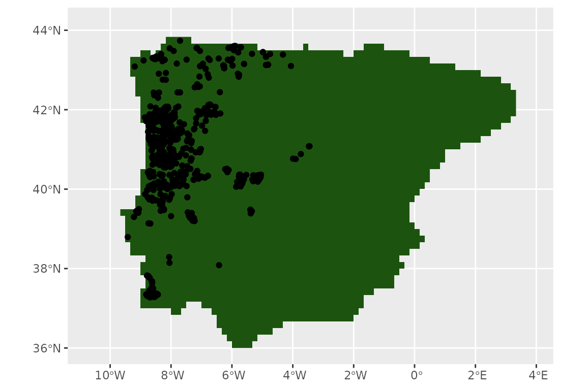
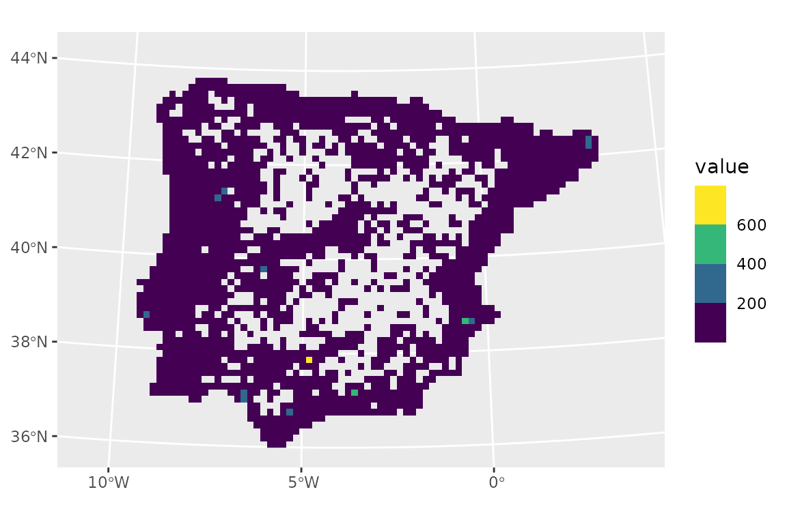
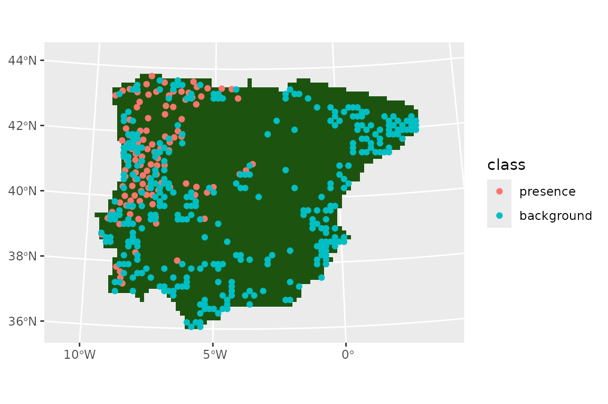
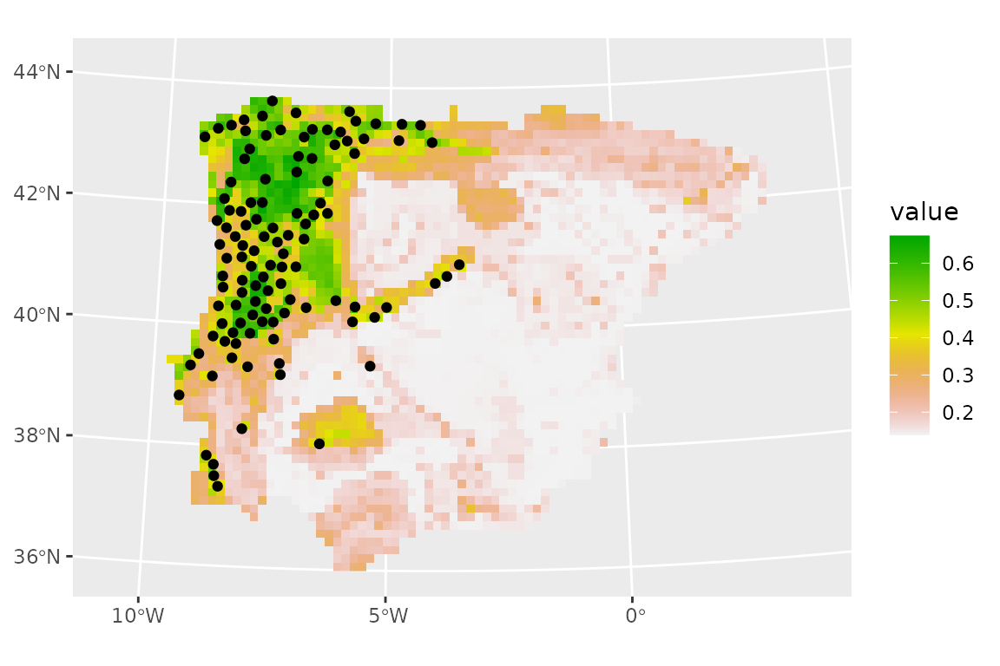
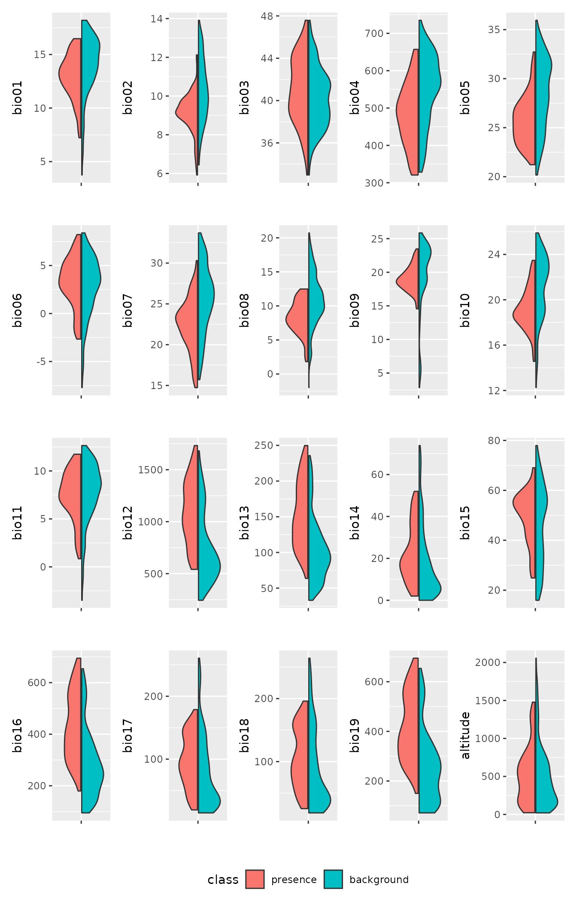
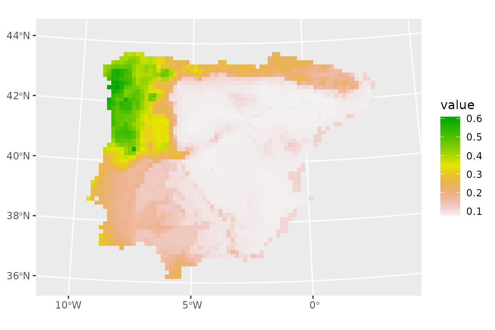
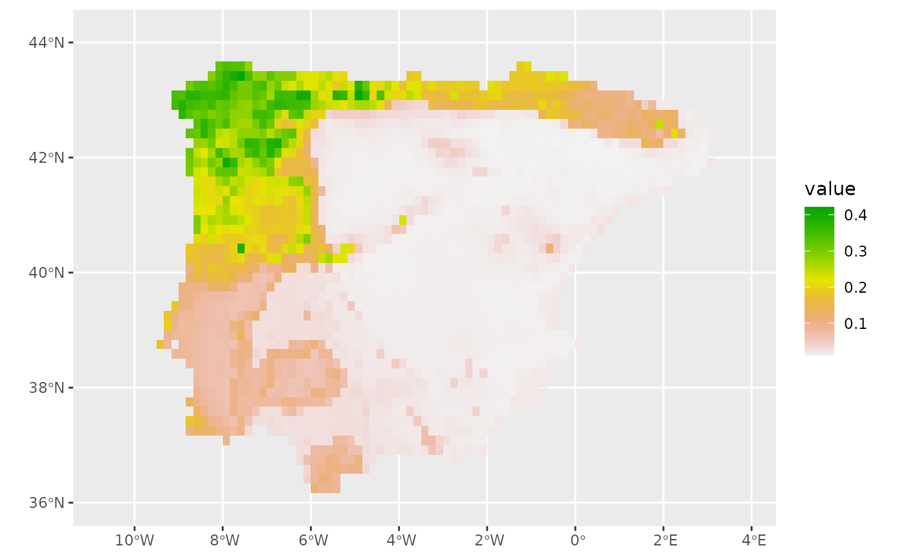
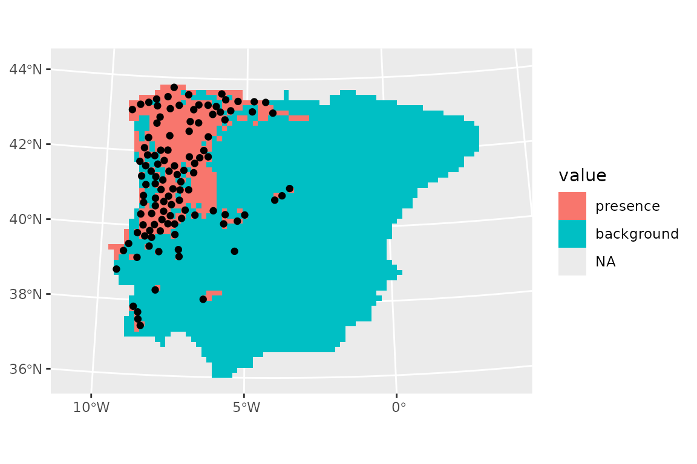
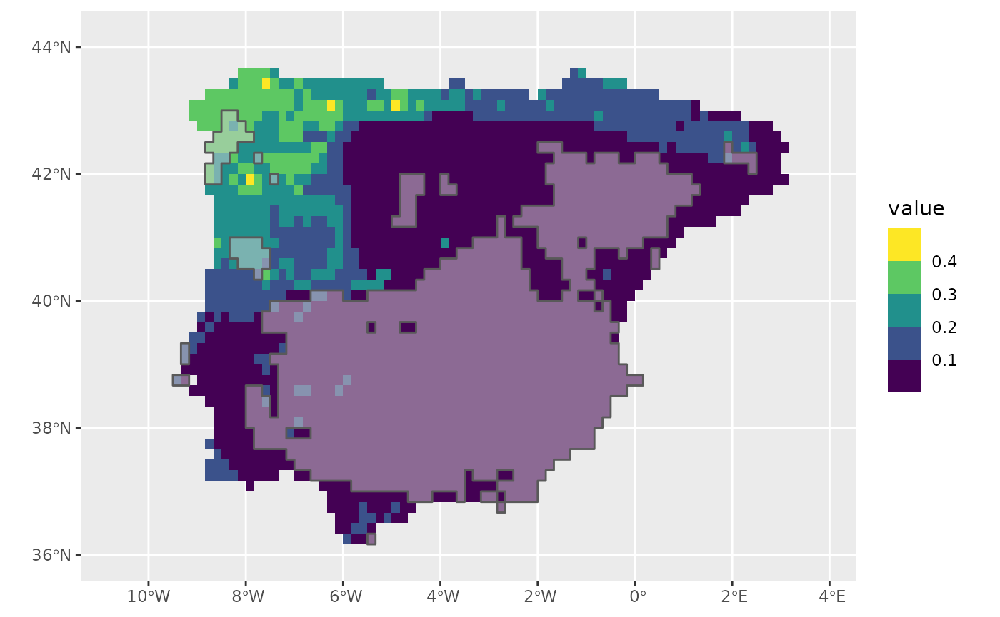

SDMs with tidymodels
Species Distribution Modelling relies on several algorithms, many of
which have a number of hyperparameters that require turning. The
tidymodels universe includes a number of packages
specifically design to fit, tune and validate models. The advantage of
tidymodels is that the models syntax and the results
returned to the users are standardised, thus providing a coherent
interface to modelling. Given the variety of models required for SDM,
tidymodels is an ideal framework. tidysdm
provides a number of wrappers and specialised functions to facilitate
the fitting of SDM with tidymodels.
This article provides an overview of the how tidysdm
facilitates fitting SDMs. Further articles, detailing how to use the
package for palaeodata, fitting more complex models and how to
troubleshoot models can be found on the tidisdm
website. As tidysdm relies on tidymodels,
users are advised to familiarise themselves with the introductory
tutorials on the tidymodels
website.
When we load tidysdm, it automatically loads
tidymodels and all associated packages necessary to fit
models:
library(tidysdm)
#> Loading required package: tidymodels
#> ── Attaching packages ────────────────────────────────────── tidymodels 1.2.0 ──
#> ✔ broom 1.0.6 ✔ recipes 1.0.10
#> ✔ dials 1.2.1 ✔ rsample 1.2.1
#> ✔ dplyr 1.1.4 ✔ tibble 3.2.1
#> ✔ ggplot2 3.5.1 ✔ tidyr 1.3.1
#> ✔ infer 1.0.7 ✔ tune 1.2.1
#> ✔ modeldata 1.3.0 ✔ workflows 1.1.4
#> ✔ parsnip 1.2.1 ✔ workflowsets 1.1.0
#> ✔ purrr 1.0.2 ✔ yardstick 1.3.1
#> ── Conflicts ───────────────────────────────────────── tidymodels_conflicts() ──
#> ✖ purrr::discard() masks scales::discard()
#> ✖ dplyr::filter() masks stats::filter()
#> ✖ dplyr::lag() masks stats::lag()
#> ✖ recipes::step() masks stats::step()
#> • Learn how to get started at https://www.tidymodels.org/start/
#> Loading required package: spatialsampleAccessing the data for this vignette: how to use
rgbif
We start by reading in a set of presences for a species of lizard
that inhabits the Iberian peninsula, Lacerta schreiberi. This
data is taken from GBIF Occurrence Download (6 July 2023) https://doi.org/10.15468/dl.srq3b3. The dataset is
already included in the tidysdm package:
data(lacerta)
lacerta
#> ID latitude longitude
#> 1 858029749 42.57386 -7.093272
#> 2 858029738 42.57386 -7.093272
#> 3 614631090 41.36433 -7.901420
#> 4 614631085 41.33614 -7.806970
#> 5 614631083 41.33599 -7.808340
#> 6 614631080 41.38818 -7.830690
#> 7 614631072 41.37781 -7.813690
#> 8 614559731 40.34988 -7.702352
#> 9 614559728 40.38260 -7.701418
#> 10 614559657 40.35550 -7.558990
#> 11 614559646 40.29421 -7.650721
#> 12 614559638 40.31025 -7.750595
#> 13 614559626 40.30913 -7.754499
#> 14 614559614 40.30823 -7.755680
#> 15 614559580 40.36137 -7.652468
#> 16 614559536 40.32880 -7.675835
#> 17 614559494 40.32503 -7.683771
#> 18 614559485 40.32780 -7.677855
#> 19 4138510168 42.02203 -8.128677
#> 20 4138300594 41.99143 -8.268817
#> 21 4137774808 41.59728 -8.736125
#> 22 4137647526 41.28201 -8.731018
#> 23 4137647525 41.82842 -7.917928
#> 24 4134139940 40.69223 -8.162669
#> 25 4133852702 40.06937 -8.268567
#> 26 4121487317 41.68082 -7.713207
#> 27 4121307904 41.88402 -8.252778
#> 28 4121184631 40.84378 -7.726580
#> 29 4121124321 41.09547 -8.488889
#> 30 4116626006 42.04772 -8.503785
#> 31 4116285362 40.85782 -8.281194
#> 32 4116236838 40.66703 -7.900817
#> 33 4116092213 41.61971 -8.087063
#> 34 4112181181 41.70629 -8.096636
#> 35 4112023856 40.89950 -8.236026
#> 36 4111883952 41.63347 -7.574793
#> 37 4111614197 40.32288 -7.602690
#> 38 4103336935 40.08139 -8.204578
#> 39 4103238233 40.09843 -8.235022
#> 40 4102652095 41.87182 -8.208900
#> 41 4102603846 40.92872 -8.257428
#> 42 4102587117 41.86692 -8.216805
#> 43 4097012311 40.76552 -8.156668
#> 44 4096983593 40.92807 -8.258583
#> 45 4096753776 40.92810 -8.258452
#> 46 4080894369 40.37558 -8.368415
#> 47 4080783334 41.88167 -8.694533
#> 48 4076368267 40.63692 -8.439818
#> 49 4076093306 40.15494 -8.220965
#> 50 4076035760 40.76200 -8.553856
#> 51 4058226968 40.39995 -7.588924
#> 52 4058037946 40.40788 -7.562885
#> 53 4057914333 40.29825 -7.767162
#> 54 4056787598 43.40633 -5.339476
#> 55 4056745747 41.76657 -8.642622
#> 56 4056481420 40.40565 -7.891960
#> 57 4056306431 37.33848 -8.572752
#> 58 4046414634 40.84864 -8.382517
#> 59 4018170017 40.84750 -8.474317
#> 60 4015144485 41.16098 -8.482696
#> 61 4014974842 41.16116 -8.482167
#> 62 4006699733 41.80984 -8.131572
#> 63 3997288194 43.25489 -8.214883
#> 64 3997172501 43.45000 -4.980000
#> 65 3997131929 43.25482 -8.214870
#> 66 3997050991 43.45000 -4.980000
#> 68 3996318299 43.31143 -8.541861
#> 69 3996029768 43.25493 -8.215063
#> 70 3995883566 43.25478 -8.214628
#> 71 3995742860 40.24523 -5.604502
#> 72 3994052177 40.40062 -7.587015
#> 73 3966586163 37.32890 -8.583760
#> 74 3947369148 40.19553 -8.236308
#> 75 3912316870 41.09898 -8.560330
#> 76 3912179831 41.31493 -8.257731
#> 77 3907446980 42.83405 -7.066258
#> 78 3907284763 43.12507 -4.880099
#> 79 3907157374 43.22843 -6.046033
#> 80 3907117102 40.34128 -5.134518
#> 81 3906896706 43.60513 -5.888642
#> 82 3906336401 40.19971 -5.742140
#> 83 3906255544 40.33909 -5.156703
#> 84 3906081395 40.27000 -5.240000
#> 85 3906018124 41.77160 -8.188200
#> 86 3905579314 42.36183 -8.549850
#> 87 3905503521 43.31927 -8.521358
#> 88 3904992758 40.30552 -5.238461
#> 89 3904847047 42.82917 -5.776468
#> 90 3904684037 43.12507 -4.880099
#> 91 3904597803 42.90586 -8.402835
#> 92 3904516076 43.40315 -4.744980
#> 93 3904369429 43.22844 -6.046053
#> 94 3904282757 43.22840 -6.046134
#> 95 3903197158 40.08107 -8.203597
#> 96 3902606076 41.57694 -7.982271
#> 97 3902601687 41.16419 -8.482072
#> 98 3902423737 40.67403 -8.214256
#> 99 3902372729 41.25738 -7.935210
#> 100 3888804754 40.37550 -8.365012
#> 101 3873365684 40.37473 -8.365758
#> 102 3860741206 40.89950 -8.235959
#> 103 3860517442 41.28359 -7.838244
#> 104 3860325381 41.73333 -8.160636
#> 105 3860006479 39.87334 -8.852991
#> 106 3859664580 41.27729 -7.995230
#> 107 3859567137 40.37849 -8.371000
#> 108 3858854802 41.72320 -8.129511
#> 109 3858854034 40.35641 -7.558820
#> 110 3827447637 40.29260 -5.171154
#> 111 3827426685 40.30645 -5.190073
#> 114 3827170532 40.29279 -5.171848
#> 115 3827155357 43.25506 -8.213604
#> 116 3827120895 39.38935 -5.382989
#> 117 3826867567 43.29656 -8.554120
#> 118 3826866390 43.55284 -7.155949
#> 119 3826810234 43.10727 -6.259454
#> 120 3826711597 43.57161 -5.699182
#> 121 3826663742 43.49593 -5.934134
#> 123 3826194745 43.39108 -8.323385
#> 124 3826132575 40.35440 -5.112846
#> 125 3826103015 43.57041 -5.722249
#> 126 3826079371 43.55287 -7.155935
#> 127 3826034598 40.30568 -5.204373
#> 128 3825994248 43.55289 -7.156223
#> 129 3825834008 42.43518 -7.787696
#> 130 3825671626 42.29921 -8.427880
#> 131 3825286990 42.88293 -5.763342
#> 132 3825242818 43.11725 -6.284291
#> 133 3824773631 40.28159 -5.229868
#> 134 3824658562 42.75729 -8.272977
#> 135 3824458747 40.11800 -5.778082
#> 136 3824395901 43.60045 -5.920679
#> 138 3824325042 43.25876 -6.132585
#> 140 3824114271 43.55380 -7.150638
#> 141 3823724468 40.30637 -5.190222
#> 142 3823695876 42.04758 -7.833532
#> 143 3823679192 43.16100 -7.811129
#> 144 3823644579 43.22112 -8.282746
#> 145 3823558122 43.57641 -5.990616
#> 146 3823525379 42.43281 -8.395458
#> 147 3823405779 43.25557 -8.215127
#> 148 3823370594 40.30734 -5.190725
#> 149 3823352692 43.26045 -7.489225
#> 150 3823006585 43.25548 -8.215295
#> 151 3822784961 42.07946 -7.761854
#> 152 3822665898 42.90595 -5.805009
#> 153 3802554684 40.35618 -7.558206
#> 154 3802446032 41.31493 -8.257731
#> 155 3785165345 41.09905 -8.559851
#> 156 3785030262 40.44248 -7.515020
#> 157 3784779955 41.19607 -8.161694
#> 158 3773639035 42.00592 -8.166519
#> 159 3773638868 40.92789 -8.259287
#> 160 3773600023 40.32829 -7.586550
#> 161 3773579360 41.46367 -8.397842
#> 162 3773331266 41.46369 -8.397868
#> 163 3772430861 41.20036 -8.680263
#> 164 3764501931 41.28115 -8.730330
#> 165 3764237964 37.30751 -8.575900
#> 166 3760331840 40.66485 -7.906360
#> 167 3760256841 40.66477 -7.906402
#> 168 3760245302 41.80926 -8.132585
#> 169 3759917005 40.93054 -8.246717
#> 171 3759664475 41.28517 -8.340068
#> 172 3759511079 40.11704 -8.497478
#> 173 3759285347 41.31493 -8.257731
#> 174 3747177530 41.29057 -8.235037
#> 175 3747105785 41.82141 -8.295183
#> 176 3742983478 40.01487 -8.587528
#> 177 3733279230 43.54593 -8.046426
#> 178 3732795612 42.12000 -6.770000
#> 179 3732784603 43.38732 -4.323388
#> 180 3732557326 43.28899 -6.771403
#> 181 3732423322 42.43443 -7.704437
#> 182 3732260894 40.26377 -5.268384
#> 183 3731723971 43.73630 -7.703093
#> 186 3731246742 40.27246 -5.234587
#> 187 3731140171 40.27177 -5.246742
#> 188 3730867547 43.57594 -5.992134
#> 189 3730795274 43.57253 -5.994503
#> 190 3730747451 43.40228 -8.327387
#> 191 3730259342 43.30598 -8.536074
#> 192 3729886329 43.28944 -8.489956
#> 193 3729533373 43.30155 -8.503598
#> 194 3729338522 40.35877 -5.526905
#> 195 3729243652 43.59940 -5.939154
#> 196 3729232715 43.30372 -8.428818
#> 197 3729072329 40.34943 -5.295884
#> 198 3728708629 42.92490 -8.169698
#> 199 3728646722 40.27644 -5.231343
#> 200 3728584484 40.27056 -5.238148
#> 201 3728498330 43.10000 -6.270000
#> 202 3728484592 43.30411 -8.606538
#> 203 3728404536 40.21742 -7.732143
#> 204 3728122900 43.25263 -6.728374
#> 205 3728027283 40.29539 -5.173345
#> 206 3727992574 40.29203 -5.171374
#> 207 3727770407 43.04447 -6.251601
#> 208 3727675314 43.28323 -8.545810
#> 209 3727241475 40.34139 -5.186852
#> 210 3726885606 42.11812 -6.714393
#> 211 3726351000 42.03855 -6.887438
#> 212 3726280229 43.10000 -6.270000
#> 213 3726168466 43.15211 -5.600696
#> 214 3726010635 43.10000 -4.060000
#> 215 3725698669 43.13044 -4.809709
#> 216 3725422827 42.44063 -6.394794
#> 219 3725093673 40.42682 -6.149007
#> 220 3725060873 43.15699 -6.952821
#> 222 3722268573 43.55432 -6.111816
#> 224 3721736481 43.47930 -7.913536
#> 225 3721494769 43.29768 -8.570078
#> 226 3721392112 40.27242 -5.234640
#> 227 3721022126 40.51314 -6.167968
#> 228 3720913817 43.30505 -8.535715
#> 229 3720828362 43.48000 -7.050000
#> 230 3720765384 43.08638 -9.192246
#> 231 3720759073 43.44339 -5.791692
#> 232 3720503132 40.51314 -6.167968
#> 233 3720484714 43.55238 -6.014103
#> 235 3720151980 39.47717 -5.388593
#> 236 3720021627 43.13527 -4.816869
#> 237 3719941935 43.57282 -5.994296
#> 238 3719639436 43.57665 -5.990095
#> 239 3719396101 40.26263 -5.270146
#> 240 3719284704 43.28000 -5.990000
#> 241 3719224766 39.44328 -5.344995
#> 242 3719071502 40.27115 -5.235581
#> 243 3718346021 43.27167 -8.516319
#> 244 3718113343 43.10000 -6.270000
#> 245 3718042204 43.10000 -6.270000
#> 246 3717590281 43.10000 -6.270000
#> 247 3717451694 43.29755 -8.571736
#> 248 3717446813 43.29811 -8.534722
#> 249 3717173342 40.31362 -5.627051
#> 250 3716997397 42.40000 -8.490000
#> 251 3716892411 42.07009 -6.541847
#> 253 3716632135 42.07006 -6.541246
#> 254 3716268286 40.27742 -5.111580
#> 256 3715931235 43.23981 -8.901147
#> 258 3715143459 40.24000 -5.330000
#> 259 3698100690 39.31591 -7.330855
#> 260 3456534329 39.60585 -8.359525
#> 261 3415427142 41.08160 -8.471741
#> 262 3408234996 40.81437 -8.227214
#> 263 3390592007 41.81128 -8.044139
#> 264 3390592000 41.92987 -8.247404
#> 265 3390591998 41.41318 -7.846593
#> 266 3390591995 41.78309 -7.912192
#> 267 3390591971 42.00115 -8.137898
#> 268 3390591967 37.37215 -8.476313
#> 269 3390591966 41.81295 -8.272851
#> 270 3390591954 37.31002 -8.781429
#> 271 3390591946 41.65946 -8.214528
#> 272 3390591940 41.79707 -8.802613
#> 273 3390591931 41.41178 -7.715009
#> 274 3390591923 41.74814 -8.033049
#> 275 3390591909 41.29657 -7.896422
#> 276 3390591908 42.03769 -8.209891
#> 277 3390591902 41.86966 -6.525084
#> 278 3390591891 37.63410 -8.621811
#> 279 3390591866 37.35397 -8.442567
#> 280 3390591865 41.32324 -7.860128
#> 281 3390591864 41.91170 -8.223503
#> 282 3390591861 40.90137 -8.021737
#> 283 3390591856 41.93926 -8.307606
#> 284 3390591855 37.82380 -8.791282
#> 285 3390591848 41.78436 -8.056572
#> 286 3390591824 41.81945 -7.947697
#> 287 3390591815 41.85524 -7.923018
#> 288 3390591813 41.92319 -6.957134
#> 289 3390591805 41.76881 -8.429748
#> 290 3390591793 42.00124 -8.149971
#> 291 3390591787 41.76683 -8.116979
#> 292 3390591786 41.50183 -7.713232
#> 293 3390591783 41.74017 -8.165445
#> 294 3390591775 41.76674 -8.104951
#> 295 3390591774 41.88515 -8.296138
#> 296 3390591766 41.93966 -6.872173
#> 297 3390591765 41.84890 -8.260399
#> 298 3390591763 41.81022 -7.923772
#> 299 3390591761 41.90338 -8.332106
#> 300 3390591747 41.93197 -6.944793
#> 301 3390591745 41.81922 -7.923621
#> 302 3390591734 41.77685 -8.261227
#> 303 3390591720 41.81213 -8.152474
#> 304 3390591718 41.94841 -8.331636
#> 305 3390591710 41.92404 -7.005345
#> 306 3390591705 37.42686 -8.645462
#> 307 3390591681 41.76615 -8.032778
#> 308 3390591680 40.85867 -8.354572
#> 309 3390591679 41.79385 -8.116609
#> 310 3390591665 39.34446 -7.359429
#> 311 3390591654 41.77628 -8.177010
#> 312 3390591642 42.02817 -8.137533
#> 313 3390591632 41.78502 -8.140797
#> 314 3390591631 41.93447 -7.089449
#> 315 3390591625 41.80165 -7.972062
#> 316 3390591614 41.92705 -7.897690
#> 317 3390591611 41.80143 -7.947992
#> 318 3390591594 41.34952 -7.787951
#> 319 3390591593 41.87560 -8.211889
#> 320 3390591590 37.40887 -8.656846
#> 321 3390591586 40.98243 -8.020540
#> 322 3390591581 41.69460 -8.093934
#> 323 3390591574 41.75745 -8.068994
#> 324 3390591566 41.95712 -8.283281
#> 325 3390591555 41.77442 -7.948433
#> 326 3390591548 41.95775 -8.391870
#> 327 3390591547 41.36753 -7.787617
#> 328 3390591546 41.81087 -7.995991
#> 329 3390591535 41.85579 -7.983243
#> 330 3390591529 41.84646 -7.947255
#> 331 3390591521 41.84699 -8.007472
#> 332 3390591513 41.67739 -8.202297
#> 333 3390591507 41.96613 -8.283180
#> 334 3390591490 41.86642 -8.187904
#> 335 3390591486 42.02826 -8.149611
#> 336 3390591482 41.97498 -8.258943
#> 337 3390591474 41.70449 -8.213981
#> 338 3390591461 39.29008 -7.337507
#> 339 3390591422 41.74918 -8.165329
#> 340 3390591411 41.88026 -7.079013
#> 341 3390591410 41.71192 -8.009551
#> 342 3390591403 41.79265 -7.972206
#> 343 3390591393 41.89377 -8.235774
#> 344 3390591374 42.01016 -8.137777
#> 345 3390591372 39.29926 -7.348887
#> 346 3390591366 41.72250 -8.213761
#> 347 3390591343 42.00167 -8.210336
#> 348 3390591323 41.88886 -7.054650
#> 349 3390591318 41.91036 -6.752582
#> 350 3390591315 41.75725 -8.044940
#> 351 3390591312 41.75782 -8.117103
#> 352 3390591306 41.93986 -8.416165
#> 353 3390591295 41.26835 -7.777515
#> 354 3390591291 41.82919 -8.031831
#> 355 3390591283 41.92297 -6.945082
#> 356 3390591267 41.92929 -6.800157
#> 357 3390591254 40.80315 -8.129872
#> 358 3390591245 41.34077 -7.812017
#> 359 3390591231 41.77453 -7.960463
#> 360 3390591221 41.92995 -8.259464
#> 361 3390591219 41.79243 -7.948139
#> 362 3390591208 41.77602 -8.140917
#> 363 3390591205 41.83745 -7.947403
#> 364 3390591203 41.91805 -7.897845
#> 365 3390591199 41.88477 -8.235881
#> 366 3390591191 37.34516 -8.487790
#> 367 3390591167 41.93986 -8.416165
#> 368 3390591125 41.37654 -7.787450
#> 369 3390591119 41.97440 -8.174466
#> 370 3390591118 37.31886 -8.702402
#> 371 3390591116 41.81911 -7.911583
#> 372 3390591111 41.32382 -7.919859
#> 373 3390591108 41.79394 -8.128643
#> 374 3390591086 41.91793 -7.885789
#> 375 3390591085 41.85590 -7.995288
#> 376 3390591082 41.87347 -7.946812
#> 377 3390591080 41.75673 -7.984807
#> 378 3390591079 41.94204 -7.004784
#> 379 3390591076 41.83767 -7.971486
#> 380 3390591065 40.94556 -7.926045
#> 381 3390591060 41.72171 -8.105575
#> 382 3390591051 42.07328 -8.149011
#> 383 3390591043 41.81044 -7.947845
#> 384 3390591036 41.86480 -7.983100
#> 385 3390591035 41.72180 -8.117596
#> 386 3390591031 41.67801 -8.298398
#> 387 3390591011 41.91816 -7.909902
#> 388 3390591002 41.82122 -8.164394
#> 389 3390590999 41.67763 -8.238334
#> 390 3390590995 41.94747 -8.186877
#> 391 3390590988 41.69548 -8.214090
#> 392 3390590986 41.94367 -7.101237
#> 393 3390590978 41.97506 -8.271011
#> 394 3390590977 41.75801 -8.141157
#> 395 3390590976 42.01934 -8.161808
#> 396 3390590973 41.93261 -6.980956
#> 397 3390590959 41.83974 -8.236417
#> 398 3390590956 41.91545 -7.029728
#> 399 3390590947 41.78586 -8.261123
#> 400 3390590946 41.82823 -7.923470
#> 401 3390590942 41.87358 -7.958860
#> 402 3390590935 41.80237 -8.056308
#> 403 3390590924 37.34531 -8.521658
#> 404 3390590910 40.95510 -7.985299
#> 405 3390590909 41.89826 -7.078474
#> 406 3390590903 37.42683 -8.634159
#> 407 3390590890 41.83799 -8.007611
#> 408 3390590889 41.90004 -7.898155
#> 409 3390590874 41.88529 -8.320242
#> 410 3390590870 41.73151 -8.213652
#> 411 3390590867 42.07337 -8.161097
#> 412 3390590864 41.75773 -8.105076
#> 413 3390590860 41.48300 -7.641741
#> 414 3390590859 41.68648 -8.214200
#> 415 3390590840 41.92159 -8.368094
#> 416 3390590838 41.96635 -8.319381
#> 417 3390590831 41.74909 -8.153303
#> 418 3390590821 41.83065 -8.224482
#> 419 3390590819 41.82196 -8.272749
#> 420 3390590815 41.83949 -8.200288
#> 421 3390590813 41.89430 -8.320146
#> 422 3390590787 41.90331 -8.320051
#> 423 3390590784 41.89992 -7.886102
#> 424 3390590783 41.70415 -8.165911
#> 425 3390590778 42.04627 -8.149371
#> 426 3390590762 41.83689 -7.887196
#> 427 3390590760 41.98341 -8.174350
#> 428 3390590759 41.85547 -7.947107
#> 429 3390590756 41.73099 -8.141517
#> 430 3390590755 41.34965 -7.799902
#> 431 3390590749 42.04644 -8.173534
#> 432 3390590743 41.41243 -7.774819
#> 433 3390590737 41.49296 -7.725386
#> 434 3390590736 41.93880 -8.235237
#> 435 3390590732 39.30875 -7.383459
#> 436 3390590722 41.71212 -8.033588
#> 437 3390590697 41.83756 -7.959444
#> 438 3390590696 37.50798 -8.645079
#> 439 3390590688 41.81204 -8.140437
#> 440 3390590680 41.76541 -7.948580
#> 441 3390590679 41.78331 -7.936255
#> 442 3390590664 41.70312 -8.033723
#> 443 3390590662 41.94788 -8.247192
#> 444 3390590653 41.95720 -8.295346
#> 445 3390590652 41.75852 -8.213322
#> 446 3390590647 41.42024 -7.666979
#> 447 3390590623 41.84833 -8.176088
#> 448 3390590621 41.24362 -8.016652
#> 449 3390590617 41.98391 -8.246768
#> 450 3390590613 41.94854 -8.355764
#> 451 3390590611 41.67786 -8.274373
#> 452 3390590583 41.24219 -7.861537
#> 453 3390590580 41.99233 -8.162162
#> 454 3390590576 41.74026 -8.177469
#> 455 3390590573 41.88452 -8.199727
#> 456 3390590562 41.99267 -8.210448
#> 457 3390590559 41.87302 -7.898619
#> 458 3390590556 41.95734 -8.319477
#> 459 3390590552 37.33655 -8.589445
#> 460 3390590546 41.51149 -7.772954
#> 461 3390590545 41.98383 -8.234699
#> 462 3390590531 37.82378 -8.779920
#> 463 3390590528 37.66117 -8.633012
#> 464 3390590520 39.30859 -7.371864
#> 465 3390590515 41.82173 -8.236631
#> 466 3390590509 37.35461 -8.600638
#> 467 3390590498 41.98329 -6.798299
#> 468 3390590487 37.67916 -8.621582
#> 469 3390590486 42.01051 -8.186075
#> 470 3390590480 41.35914 -7.847547
#> 471 3390590476 39.31776 -7.383252
#> 472 3390590473 41.93469 -6.619057
#> 473 3390590470 41.70351 -8.081790
#> 474 3390590468 37.48996 -8.645164
#> 475 3390590462 41.70370 -8.105825
#> 476 3390590451 37.34491 -8.431345
#> 477 3390590437 41.94140 -6.968616
#> 478 3390590419 39.29909 -7.337294
#> 479 3390590417 41.80999 -7.899699
#> 480 3390590416 41.91162 -8.211447
#> 481 3390590414 41.79709 -8.814649
#> 482 3390590381 41.76645 -8.068864
#> 483 3390590371 42.07292 -8.100665
#> 484 3390590370 39.38081 -7.381799
#> 485 3390590368 41.68569 -8.106074
#> 486 3390590363 41.70332 -8.057757
#> 487 3390590351 41.81231 -8.176549
#> 488 3390590335 41.73125 -8.177584
#> 489 3390590333 41.93903 -8.271421
#> 490 3390590320 37.44508 -8.713205
#> 491 3390590317 41.76692 -8.129008
#> 492 3390590311 41.81288 -8.260813
#> 493 3390590307 41.82218 -8.308869
#> 494 3390590304 41.80266 -8.092414
#> 495 3390590303 41.85557 -7.959153
#> 496 3390590300 41.88498 -6.837833
#> 497 3390590297 41.71270 -8.105700
#> 498 3390590275 39.38900 -7.323552
#> 499 3390590263 41.80098 -7.899853
#> 500 3390590258 41.70424 -8.177928
#> 501 3390590256 41.78511 -8.152830
#> 502 3390590251 41.90904 -7.898000
#> 503 3390590228 37.31860 -8.612115
#> 504 3390590223 41.35853 -7.787784
#> 505 3390590218 41.70361 -8.093807
#> 506 3390590217 41.92694 -7.885632
#> 507 3390590208 41.51957 -7.688912
#> 508 3390590207 41.76800 -8.285389
#> 509 3390590203 40.88240 -7.915197
#> 510 3390590191 41.81118 -8.032102
#> 511 3390590186 41.68605 -8.154129
#> 512 3390590185 41.82845 -7.947550
#> 513 3390590169 41.95019 -6.956272
#> 514 3390590159 41.72198 -8.141637
#> 515 3390590151 41.49242 -7.677481
#> 516 3390590137 41.83966 -8.224374
#> 517 3390590110 41.85798 -6.838743
#> 518 3390590109 41.79438 -8.188814
#> 519 3390590102 41.94161 -6.980672
#> 520 3390590099 41.80247 -8.068343
#> 521 3390590092 41.74844 -8.069124
#> 522 3390590090 41.82019 -8.031967
#> 523 3390590082 41.77593 -8.128887
#> 524 3390590080 41.90113 -6.740851
#> 525 3390590076 41.80976 -7.875627
#> 526 3390590068 41.72993 -8.009275
#> 527 3390590064 41.98323 -8.150210
#> 528 3390590062 41.36766 -7.799571
#> 529 3390590061 41.91231 -8.319955
#> 530 3390590057 41.95040 -6.968330
#> 531 3390590042 41.00003 -7.972721
#> 532 3390590033 39.28074 -7.314540
#> 533 3390590026 41.71333 -8.189833
#> 534 3390590009 41.76664 -8.092922
#> 535 3390590008 41.89765 -7.042329
#> 536 3390590005 37.52598 -8.633677
#> 537 3390589999 41.82008 -8.019928
#> 538 3390589987 41.24320 -7.968923
#> 539 3390589980 39.27240 -7.361110
#> 540 3390589974 41.42038 -7.678942
#> 541 3390589971 41.35037 -7.871608
#> 542 3390589968 41.82140 -8.188473
#> 543 3390589950 41.25071 -7.813649
#> 544 3390589924 39.27071 -7.245228
#> 545 3390589922 41.92079 -8.235452
#> 546 3390589910 42.01034 -8.161926
#> 547 3390589905 41.80075 -7.875784
#> 548 3390589901 41.77464 -7.972493
#> 549 3390589894 41.68614 -8.166143
#> 550 3390589875 41.87551 -8.199840
#> 551 3390589860 41.73013 -8.033318
#> 552 3390589851 39.39800 -7.323337
#> 553 3390589843 41.80304 -8.140557
#> 554 3390589842 41.81899 -7.899545
#> 555 3390589838 41.92361 -6.981239
#> 556 3390589813 37.35472 -8.634512
#> 557 3390589812 41.74943 -8.201406
#> 558 3390589806 41.91194 -8.259672
#> 559 3390589803 41.71261 -8.093681
#> 560 3390589800 41.71252 -8.081662
#> 561 3390589794 41.84589 -7.887040
#> 563 3390589783 39.20817 -7.281532
#> 564 3390589780 41.81077 -7.983955
#> 565 3390589774 37.36377 -8.645760
#> 566 3390589772 41.70432 -8.189946
#> 567 3390589771 41.72982 -7.997253
#> 568 3390589754 42.05545 -8.173418
#> 569 3390589750 42.03735 -8.161571
#> 570 3390589741 41.96548 -8.186648
#> 571 3390589740 41.99299 -8.258734
#> 572 3390589717 41.99307 -8.270806
#> 573 3390589699 41.33164 -7.800233
#> 574 3390589684 41.88500 -8.272035
#> 575 3390589683 41.87293 -6.681597
#> 576 3390589680 41.47508 -7.737712
#> 577 3390589674 41.79221 -7.924073
#> 578 3390589651 41.81977 -7.983812
#> 579 3390589649 41.77574 -8.104826
#> 580 3390589648 41.84689 -7.995429
#> 581 3390589647 42.03726 -8.149491
#> 582 3390589630 41.71232 -8.057625
#> 583 3390589622 41.85806 -8.284388
#> 584 3390589617 41.82029 -8.044005
#> 585 3390589616 41.71222 -8.045607
#> 586 3390589609 42.01916 -8.137655
#> 587 3390589604 37.40006 -8.735973
#> 588 3390589599 41.37667 -7.799406
#> 589 3390589595 41.50129 -7.665320
#> 590 3390589585 41.76552 -7.960608
#> 591 3390589579 41.75818 -8.165212
#> 592 3390589569 37.39998 -8.702079
#> 593 3390589564 41.93073 -8.392126
#> 594 3390589558 41.79412 -8.152711
#> 595 3390589553 41.77611 -8.152948
#> 596 3390589541 41.70406 -8.153893
#> 597 3390589530 41.92717 -7.909749
#> 598 3390589529 41.78554 -8.212992
#> 599 3390589524 39.33561 -7.371238
#> 600 3390589523 41.87534 -8.175741
#> 601 3390589522 37.31822 -8.510545
#> 602 3390589494 41.39575 -7.906708
#> 603 3390589484 42.05562 -8.197584
#> 604 3390589483 41.73117 -8.165562
#> 605 3390589475 41.48435 -7.761488
#> 606 3390589468 37.32757 -8.600782
#> 607 3390589457 37.49879 -8.588557
#> 608 3390589454 41.49283 -7.713410
#> 609 3390589453 39.19830 -7.223871
#> 610 3390589450 41.71349 -8.213871
#> 611 3390589448 37.34544 -8.555527
#> 612 3390589441 41.76625 -8.044807
#> 613 3390589433 41.73963 -8.093302
#> 614 3390589432 41.86413 -7.910820
#> 615 3390589410 41.81499 -8.754400
#> 616 3390589408 41.95287 -7.113029
#> 617 3390589400 41.76753 -8.213212
#> 618 3390589399 41.89416 -8.296039
#> 619 3390589378 41.33225 -7.859971
#> 620 3390589375 41.76701 -8.141037
#> 621 3390589368 41.80312 -8.152593
#> 622 3390589364 41.75792 -8.129130
#> 623 3390589361 41.80257 -8.080379
#> 624 3390589360 41.74783 -7.996973
#> 625 3390589356 41.73872 -7.985090
#> 626 3390589352 41.69540 -8.202074
#> 627 3390589343 41.88191 -7.886415
#> 628 3390589331 41.88203 -7.898465
#> 629 3390589324 41.81318 -8.308965
#> 630 3390589323 41.76736 -8.189154
#> 631 3390589285 41.38567 -7.799240
#> 632 3390589279 41.73159 -8.225674
#> 633 3390589270 41.82188 -8.260710
#> 634 3390589269 39.32578 -7.313460
#> 635 3390589266 41.43958 -7.786278
#> 636 3390589262 41.34977 -7.811853
#> 637 3390589233 41.35995 -7.931217
#> 638 3390589194 41.81097 -8.008028
#> 639 3390589191 41.73090 -8.129495
#> 640 3390589189 41.32393 -7.931806
#> 641 3390589188 41.74009 -8.153421
#> 642 3390589185 41.73108 -8.153539
#> 643 3390589178 41.82899 -8.007750
#> 644 3390589175 41.97127 -7.136623
#> 645 3390589171 41.91238 -8.332012
#> 646 3390589154 41.81280 -8.248775
#> 647 3390589148 42.05527 -8.149251
#> 648 3390589144 41.69514 -8.166027
#> 649 3390589141 41.85767 -8.224156
#> 650 3390589139 41.97474 -8.222738
#> 651 3390589132 41.97563 -8.367561
#> 652 3390589125 37.76955 -8.711957
#> 653 3390589120 40.83035 -8.153236
#> 654 3390589119 41.81108 -8.020065
#> 655 3390589118 37.32793 -8.724940
#> 656 3390589117 37.34521 -8.499080
#> 657 3390589109 41.38542 -7.775326
#> 658 3390589099 42.06446 -8.173301
#> 659 3390589094 39.32709 -7.406241
#> 660 3390589087 41.35878 -7.811689
#> 661 3390589078 41.69506 -8.154011
#> 662 3390589075 42.04662 -8.197698
#> 663 3390589072 41.84905 -8.284488
#> 664 3390589068 40.99992 -7.960833
#> 665 3390589051 41.95697 -8.259151
#> 666 3390589050 41.86458 -7.959006
#> 667 3390589048 39.25321 -7.280432
#> 668 3390589042 40.89141 -7.915050
#> 669 3390589040 41.81247 -8.200624
#> 670 3390589039 41.80087 -7.887819
#> 671 3390589032 41.75810 -8.153185
#> 672 3390589030 41.72233 -8.189720
#> 673 3390589026 41.79403 -8.140677
#> 674 3390589014 41.80295 -8.128521
#> 675 3390588999 41.71324 -8.177814
#> 676 3390588996 41.92417 -6.547096
#> 677 3390588968 41.85798 -8.272342
#> 678 3390588966 41.76728 -8.177125
#> 679 3390588937 37.32745 -8.566920
#> 680 3390588932 41.89126 -7.922413
#> 681 3390588929 41.85783 -8.248249
#> 682 3390588908 41.76710 -8.153066
#> 683 3390588902 37.39989 -8.668185
#> 684 3390588896 41.78475 -8.104700
#> 685 3390588893 41.81010 -7.911735
#> 686 3390588883 41.82929 -8.043871
#> 687 3390588878 41.76777 -8.249301
#> 688 3390588876 41.85733 -8.175972
#> 689 3390588874 41.92029 -6.800467
#> 690 3390588869 41.97482 -8.234806
#> 691 3390588864 41.83111 -8.296730
#> 692 3390588860 37.31856 -8.600830
#> 693 3390588855 41.40405 -7.834791
#> 694 3390588844 41.73134 -8.189607
#> 695 3390588825 41.78343 -7.948286
#> 696 3390588823 41.93918 -8.295545
#> 697 3390588813 37.48981 -8.599918
#> 698 3390588812 42.07310 -8.124838
#> 699 3390588807 42.02861 -8.197924
#> 700 3390588802 39.32628 -7.348252
#> 701 3390588801 41.77485 -7.996553
#> 702 3390588796 42.01068 -8.210225
#> 703 3390588782 41.34101 -7.835915
#> 704 3390588776 41.92340 -6.969187
#> 705 3390588775 42.01977 -8.222190
#> 706 3390588773 41.83734 -7.935361
#> 707 3390588771 41.78520 -8.164862
#> 708 3390588763 37.30019 -8.510662
#> 709 3390588762 41.69488 -8.129980
#> 710 3390588755 41.85568 -7.971198
#> 711 3390588753 41.70388 -8.129859
#> 712 3390588750 41.99291 -8.246662
#> 713 3390588743 41.70473 -8.250034
#> 714 3390588728 41.88484 -8.247932
#> 715 3390588726 41.90769 -6.620061
#> 716 3390588723 41.26032 -7.873159
#> 717 3390588722 37.64311 -8.621765
#> 718 3390588716 41.81888 -7.887507
#> 719 3390588708 41.72207 -8.153657
#> 720 3390588690 41.93911 -8.283483
#> 721 3390588687 42.03744 -8.173651
#> 722 3390588686 41.74034 -8.189493
#> 723 3390588666 42.03680 -8.089093
#> 724 3390588662 41.80987 -7.887663
#> 725 3390588637 41.40278 -7.715187
#> 726 3390588622 41.77715 -8.309352
#> 727 3390588620 41.27856 -7.896726
#> 728 3390588611 41.86447 -7.946960
#> 729 3390588608 41.81966 -7.971774
#> 730 3390588597 41.71298 -8.141757
#> 731 3390588595 41.80276 -8.104450
#> 732 3390588589 41.94318 -6.594616
#> 733 3390588565 37.81470 -8.745863
#> 734 3390588563 37.53495 -8.622314
#> 735 3390588557 41.75715 -8.032914
#> 736 3390588534 40.66855 -8.202608
#> 737 3390588529 41.83712 -7.911278
#> 738 3390588524 41.83723 -7.923320
#> 739 3390588520 41.96483 -6.774802
#> 740 3390588517 41.78406 -8.020476
#> 741 3390588515 41.38604 -7.835113
#> 742 3390588514 37.76953 -8.700602
#> 743 3390588510 41.88006 -7.066968
#> 744 3390588503 41.72282 -8.261846
#> 745 3390588502 37.45390 -8.645334
#> 746 3390588498 41.92547 -7.089717
#> 747 3390588493 41.82180 -8.248670
#> 748 3390588487 41.80285 -8.116485
#> 749 3390588486 41.96552 -6.810978
#> 750 3390588483 41.69588 -8.274170
#> 751 3390588481 42.03761 -8.197811
#> 752 3390588479 41.99224 -8.150091
#> 753 3390588471 37.31877 -8.668544
#> 754 3390588468 41.87369 -7.970909
#> 755 3390588458 42.00133 -8.162044
#> 756 3390588451 42.02789 -8.101300
#> 757 3390588440 40.41881 -8.759554
#> 758 3390588438 41.71307 -8.153776
#> 759 3390588433 41.85775 -8.236203
#> 761 3390588430 37.27376 -8.691301
#> 762 3390588423 39.38998 -7.393199
#> 763 3390588419 41.74824 -8.045074
#> 764 3390588417 41.94874 -8.391955
#> 765 3390588416 41.81055 -7.959881
#> 766 3390588408 37.30955 -8.600878
#> 767 3390588402 41.82867 -7.971630
#> 768 3390588399 41.98332 -8.162280
#> 769 3390588396 41.72216 -8.165678
#> 770 3390588376 37.31852 -8.589544
#> 771 3390588355 37.34560 -8.600686
#> 772 3390588347 41.78465 -8.092668
#> 773 3390588343 41.38555 -7.787283
#> 774 3390588342 41.72113 -8.033453
#> 775 3390588340 41.26944 -7.884941
#> 776 3390588324 41.71316 -8.165795
#> 777 3390588321 41.88845 -7.030557
#> 778 3390588320 41.43945 -7.774311
#> 779 3390588319 41.42194 -7.822505
#> 780 3390588318 41.85490 -7.886883
#> 781 3390588315 42.00192 -8.246556
#> 782 3390588310 39.34510 -7.405832
#> 783 3384283434 41.31493 -8.257731
#> 784 3384032591 40.89956 -8.236110
#> 785 3383987429 41.31493 -8.257731
#> 786 3355554412 41.16513 -8.024694
#> 787 3355482953 39.76608 -8.722703
#> 788 3355429222 41.88071 -8.268456
#> 789 3355111133 41.31493 -8.257731
#> 790 3344133771 39.49644 -9.053765
#> 791 3344058720 40.32542 -7.679457
#> 792 3343928818 41.71674 -8.306244
#> 793 3338021879 40.67482 -8.147830
#> 794 3337969276 41.85034 -8.708264
#> 795 3337814053 40.45982 -8.699257
#> 796 3337522793 41.90394 -8.313740
#> 797 3333553516 41.19651 -8.286673
#> 798 3333322755 41.19677 -8.286339
#> 799 3333087262 41.30550 -8.013683
#> 800 3330449692 41.33464 -7.803995
#> 801 3329293007 40.79827 -7.930406
#> 802 3329292643 40.62208 -8.360187
#> 804 3329292489 41.47911 -8.463901
#> 805 3329292218 41.43395 -8.163685
#> 806 3329291164 41.30013 -8.450164
#> 807 3329290889 40.23326 -7.252807
#> 808 3329290293 41.59946 -6.982664
#> 809 3329289525 40.30044 -7.037613
#> 810 3329289416 41.75964 -8.508078
#> 811 3329289405 40.43793 -7.682814
#> 812 3329289345 40.18139 -7.937795
#> 813 3329289078 40.81415 -7.741975
#> 814 3329288931 41.53684 -8.136827
#> 815 3329288878 39.32383 -7.409703
#> 816 3329288495 40.29993 -6.966788
#> 817 3329287995 40.80019 -7.865224
#> 818 3329287794 38.28950 -8.062067
#> 819 3329287308 40.54416 -8.191079
#> 820 3329286256 39.32098 -7.318697
#> 821 3329286062 41.20594 -7.337775
#> 822 3329285642 41.77013 -8.427015
#> 823 3329285403 41.80095 -8.808292
#> 824 3329284841 41.92975 -6.851007
#> 825 3329284082 41.88093 -8.546836
#> 826 3329283912 40.90548 -7.653728
#> 828 3329283703 40.17311 -7.932686
#> 829 3329283485 40.45912 -7.139199
#> 830 3329283360 41.35113 -8.275640
#> 831 3329283212 40.92608 -7.189482
#> 832 3329283194 40.68944 -8.006563
#> 833 3329283189 39.32081 -7.318469
#> 834 3329283151 40.98469 -8.016802
#> 835 3329282785 41.21284 -7.325327
#> 836 3329282652 40.62333 -8.363190
#> 837 3329282362 40.06480 -8.003267
#> 838 3329281650 40.98857 -8.369366
#> 839 3329281274 41.52545 -7.980517
#> 840 3329281147 40.11942 -8.550599
#> 841 3329280937 40.05002 -8.005264
#> 842 3329280489 40.80193 -8.123279
#> 843 3329280435 41.88278 -8.556417
#> 844 3329280402 39.30109 -7.349788
#> 845 3329280401 39.87476 -7.978568
#> 846 3329280295 40.75816 -8.595894
#> 847 3329280068 40.32426 -8.304472
#> 848 3329280050 40.79479 -7.935689
#> 849 3329279931 40.81977 -7.944811
#> 850 3329278939 41.00465 -7.040703
#> 851 3329278834 41.00228 -7.965674
#> 852 3329278573 40.17715 -8.426964
#> 853 3329277877 41.46072 -8.279451
#> 855 3329277708 40.33114 -8.307957
#> 856 3329277146 40.30354 -8.688116
#> 857 3329276875 40.17129 -8.397171
#> 858 3329276267 40.76254 -7.909937
#> 859 3329274822 41.21222 -7.328873
#> 860 3329274757 38.14434 -8.050680
#> 861 3329274207 41.46729 -6.881023
#> 862 3329274076 40.09568 -8.537851
#> 863 3329273492 40.84940 -7.512144
#> 864 3329273030 41.89388 -8.555810
#> 865 3329272959 40.04882 -8.002632
#> 866 3329272801 40.34474 -8.713571
#> 867 3329272798 40.64800 -7.833212
#> 868 3329272294 40.74691 -8.199169
#> 869 3329272221 39.47958 -8.232746
#> 870 3329272189 40.55999 -8.025016
#> 871 3329272143 41.89364 -8.555848
#> 872 3329272091 41.71129 -8.665769
#> 873 3329271080 40.84172 -8.597462
#> 874 3329270605 40.35631 -8.049071
#> 875 3329270302 41.44566 -8.753304
#> 876 3329270193 41.40641 -8.204237
#> 877 3329270137 40.59277 -7.629190
#> 878 3329269664 40.55015 -8.236240
#> 879 3329268998 40.22743 -7.832010
#> 880 3329268625 39.40389 -9.074734
#> 881 3329268601 40.06502 -8.102769
#> 882 3329268500 40.31277 -7.003000
#> 883 3329268250 41.50371 -8.242478
#> 884 3329268211 40.42511 -8.754608
#> 885 3329268192 41.71394 -8.497860
#> 886 3329268059 40.99385 -7.342022
#> 887 3329267484 40.78550 -8.350278
#> 888 3329267045 39.97873 -8.576666
#> 889 3329266549 39.99827 -8.744826
#> 890 3329265979 41.01000 -7.020330
#> 891 3329265750 40.61655 -8.608747
#> 892 3329265659 40.17984 -8.423253
#> 893 3329265562 41.16039 -7.338355
#> 894 3329265299 41.22146 -8.027222
#> 895 3329265296 41.31373 -8.554012
#> 896 3329265256 40.07628 -7.725050
#> 897 3329265135 41.21260 -7.320383
#> 898 3329265058 40.88559 -7.909962
#> 899 3329264463 39.13289 -8.677529
#> 900 3329264362 40.73346 -8.403175
#> 901 3329264206 40.32114 -7.594683
#> 902 3329264135 40.88774 -7.913250
#> 903 3329263242 39.79958 -8.770150
#> 904 3329263172 41.32134 -8.729542
#> 905 3329263117 39.77781 -8.035293
#> 906 3329262770 41.27965 -8.731684
#> 907 3329262614 39.72223 -8.510228
#> 908 3329262405 41.40157 -8.075658
#> 909 3329262357 40.86014 -7.912871
#> 910 3329262321 41.89324 -8.520350
#> 911 3329261495 40.76322 -8.170042
#> 912 3329261363 40.85510 -8.351734
#> 913 3329261335 41.66934 -8.665709
#> 914 3329261289 40.83051 -8.158470
#> 915 3329261080 41.75645 -8.459314
#> 916 3329260948 41.50521 -7.251483
#> 917 3329260253 39.81100 -8.253795
#> 918 3329260124 39.44980 -9.091008
#> 919 3329260102 40.09333 -7.911411
#> 920 3329259974 41.66926 -8.687368
#> 921 3329257778 40.80162 -8.627247
#> 922 3329257684 39.81313 -8.222964
#> 923 3329257621 40.00383 -8.116083
#> 924 3329257280 41.78401 -7.176541
#> 925 3329256605 39.30069 -7.350284
#> 926 3329256397 40.60728 -8.369051
#> 927 3329256396 41.39631 -8.095865
#> 928 3329256334 39.74861 -8.713499
#> 929 3329255580 39.70804 -8.604141
#> 930 3329255378 41.76828 -8.425119
#> 931 3329255186 40.81262 -7.751607
#> 932 3329255118 40.97396 -8.641266
#> 933 3329254004 41.87921 -8.706823
#> 934 3329253774 41.03691 -8.306363
#> 935 3329253656 40.23111 -7.830172
#> 936 3329253374 40.17881 -8.423344
#> 937 3329252898 41.52615 -8.563536
#> 938 3329252897 40.04944 -7.999505
#> 939 3329252876 40.89557 -7.975600
#> 940 3329252841 40.68882 -8.005756
#> 941 3329252719 39.27257 -7.366605
#> 942 3329252391 40.33365 -6.789421
#> 943 3329252258 41.41467 -8.188689
#> 944 3329252102 41.29927 -8.450195
#> 945 3329252028 41.47109 -8.578420
#> 946 3329251770 39.87230 -8.345529
#> 947 3329251524 41.44397 -7.673695
#> 948 3329251287 40.86075 -7.913882
#> 949 3329249557 39.20990 -7.293589
#> 950 3329249265 40.33659 -7.160206
#> 951 3329248958 40.14062 -8.560379
#> 952 3329248791 39.82900 -8.190883
#> 953 3329248578 40.08343 -8.606221
#> 954 3329248004 39.97836 -8.780291
#> 955 3329247839 39.71666 -8.466260
#> 956 3329247089 39.21079 -7.294957
#> 957 3329246963 41.58490 -8.214442
#> 958 3329246632 41.52477 -7.980096
#> 959 3329246610 41.22547 -8.459798
#> 960 3329246597 40.07315 -8.655712
#> 961 3329246330 41.52504 -7.980344
#> 962 3329246328 39.69417 -8.270858
#> 963 3329246131 40.67806 -8.130962
#> 964 3329245783 40.28729 -6.887813
#> 965 3329245454 40.83295 -8.156684
#> 966 3329244895 41.16444 -7.348718
#> 967 3329243367 39.39241 -7.327004
#> 968 3329243036 41.37094 -7.999303
#> 969 3329242919 40.42877 -8.588924
#> 970 3329242503 40.94492 -7.934767
#> 971 3329242288 41.20867 -7.476886
#> 972 3329242226 41.43275 -8.163485
#> 973 3329242179 41.56036 -8.101197
#> 974 3329241813 40.88610 -7.910346
#> 975 3329241617 39.27173 -7.365801
#> 976 3329241457 40.22941 -7.826170
#> 977 3329241354 39.33458 -7.373922
#> 978 3329241325 41.00033 -7.959415
#> 979 3329241313 40.38082 -7.213919
#> 980 3329241311 40.10979 -8.135222
#> 981 3329240837 40.31269 -7.004638
#> 983 3329240656 39.75410 -8.273740
#> 984 3329240509 39.97857 -8.781403
#> 985 3329240503 41.10537 -8.291460
#> 986 3329240371 41.69253 -8.484147
#> 987 3329240302 41.89251 -8.553469
#> 988 3329240177 40.57657 -7.468421
#> 989 3329239499 40.83094 -8.040520
#> 990 3329238885 40.57944 -7.986429
#> 991 3329238706 41.52142 -7.232687
#> 992 3329237581 40.06742 -8.731552
#> 993 3329237541 41.71913 -6.857837
#> 994 3329237325 40.31319 -6.988419
#> 995 3329237307 41.03934 -7.510086
#> 996 3329236759 40.00478 -8.109193
#> 997 3329236660 41.13220 -8.230756
#> 998 3329236628 40.81532 -7.742118
#> 999 3329236543 40.18139 -7.937795
#> 1000 3329235840 41.16039 -7.338355
#> 1001 3329235624 40.17879 -8.423344
#> 1002 3329235538 40.07722 -7.489520
#> 1003 3329235027 40.74497 -8.200614
#> 1004 3329234984 40.90220 -8.017028
#> 1005 3329234891 41.32958 -8.215425
#> 1006 3329234444 40.10671 -8.635760
#> 1007 3329233983 40.44031 -7.598147
#> 1008 3329233821 41.01649 -7.596240
#> 1009 3329233670 39.60229 -8.290854
#> 1010 3329232644 40.77072 -7.328269
#> 1011 3329232265 40.23934 -7.262936
#> 1012 3329232002 40.95994 -7.041040
#> 1013 3329231973 41.47861 -8.458120
#> 1014 3329231279 39.25212 -7.307283
#> 1015 3329231248 40.00846 -8.365027
#> 1016 3329230868 39.13883 -8.739823
#> 1017 3329230750 40.97773 -8.319131
#> 1018 3329230582 40.36025 -8.305775
#> 1019 3329230479 39.74024 -8.711655
#> 1020 3329229853 40.33376 -6.788417
#> 1021 3329229550 41.31180 -8.693084
#> 1022 3329228895 41.97741 -6.796891
#> 1023 3329228573 41.89390 -8.555810
#> 1024 3329228057 40.56777 -8.138864
#> 1025 3329228049 41.32126 -8.223232
#> 1026 3329227210 39.39429 -7.324660
#> 1027 3329226869 40.26048 -7.096915
#> 1028 3329226802 40.92141 -8.382510
#> 1029 3329226486 40.50972 -7.361537
#> 1030 3329226099 39.73339 -8.059449
#> 1031 3329225343 41.93110 -8.532780
#> 1032 3329225143 39.47505 -8.240865
#> 1033 3329224148 40.12043 -7.588182
#> 1034 3329224014 40.35682 -8.271140
#> 1035 3329223556 40.30103 -7.081481
#> 1036 3329223477 41.80021 -8.818573
#> 1037 3329223385 40.77072 -7.328269
#> 1038 3329222702 40.08596 -7.865174
#> 1039 3329222597 40.59228 -7.628751
#> 1040 3329222569 40.99286 -7.343711
#> 1041 3329222385 41.39733 -8.077034
#> 1042 3329221987 41.33928 -8.233368
#> 1043 3329221800 41.16039 -7.338355
#> 1044 3329221795 40.08337 -8.685898
#> 1045 3329221718 41.89706 -8.558343
#> 1046 3329221669 41.87868 -8.542236
#> 1047 3329221429 39.74366 -8.712551
#> 1048 3329221247 41.03665 -8.306188
#> 1049 3329219888 41.47375 -8.267618
#> 1050 3329219813 41.65409 -7.175876
#> 1051 3329219266 41.89469 -8.557419
#> 1053 3329218886 40.29223 -6.881883
#> 1054 3329218486 40.93601 -8.339373
#> 1055 3329218222 39.19787 -7.235137
#> 1056 3329217651 39.72253 -8.509911
#> 1057 3329217509 39.79390 -7.464717
#> 1058 3329217484 40.71705 -7.353480
#> 1059 3329217480 39.78458 -8.628064
#> 1060 3329217268 41.89030 -8.530534
#> 1061 3329217196 40.65565 -7.845097
#> 1062 3329217076 40.92800 -7.059585
#> 1063 3329216967 40.97365 -8.324902
#> 1064 3329216709 40.37176 -7.129368
#> 1065 3329216595 40.36019 -8.286850
#> 1066 3329216398 40.79310 -7.861979
#> 1067 3329215990 39.33543 -7.374622
#> 1068 3329215429 40.94187 -7.929803
#> 1069 3329214435 41.96264 -7.106005
#> 1070 3329214108 41.60223 -8.602288
#> 1071 3329213871 40.74497 -8.200614
#> 1072 3329213226 39.26543 -7.297875
#> 1073 3329213107 40.03876 -8.193203
#> 1075 3329213063 40.07160 -8.338665
#> 1076 3329212780 41.90885 -8.550545
#> 1077 3329212737 40.69075 -8.004307
#> 1078 3329212394 41.52819 -8.189849
#> 1079 3329212361 41.89684 -8.497238
#> 1080 3329212162 40.67135 -8.200169
#> 1081 3329211674 41.81407 -7.919885
#> 1082 3329211435 41.44390 -8.750497
#> 1083 3329211410 39.31996 -7.999063
#> 1084 3327946053 40.32822 -7.586815
#> 1085 3327764029 40.65869 -8.149047
#> 1086 3325960476 40.72036 -8.538632
#> 1087 3325781989 40.32800 -7.587047
#> 1088 3321164780 41.83132 -7.942085
#> 1089 3307291805 41.49652 -8.243656
#> 1090 3307271877 40.32037 -8.566488
#> 1091 3307182822 41.78869 -8.591312
#> 1092 3307161738 41.49651 -8.243683
#> 1093 3302539581 41.50533 -8.161291
#> 1094 3302233883 41.31493 -8.257731
#> 1095 3301982830 41.38788 -8.265899
#> 1096 3301826816 41.33477 -7.803562
#> 1097 3124825852 42.03279 -8.163900
#> 1098 3124779788 42.05133 -8.198026
#> 1099 3124754035 41.22317 -8.561836
#> 1100 3124604519 39.44886 -9.133770
#> 1101 3124488826 41.87712 -8.256831
#> 1102 3118420503 41.15581 -8.408566
#> 1103 3118391236 39.43973 -9.143595
#> 1104 3117881727 41.09676 -8.484416
#> 1105 3113529636 41.52669 -8.630224
#> 1106 3112407006 41.23718 -8.709723
#> 1107 3109252420 41.80656 -8.858371
#> 1108 3109183625 41.40160 -8.217143
#> 1109 3097274255 40.63201 -8.109882
#> 1110 3097106695 41.80341 -8.128234
#> 1111 3090715918 41.71145 -8.817823
#> 1112 3079864025 41.21568 -8.251008
#> 1113 3079862130 41.13973 -8.269148
#> 1114 3079584556 40.11270 -8.514184
#> 1115 3070748544 41.12344 -8.437679
#> 1116 3067983204 40.84669 -8.474585
#> 1119 2992761833 40.99824 -8.621130
#> 1120 2898528714 40.24081 -7.591225
#> 1121 2874008486 37.32097 -8.548824
#> 1122 2845585733 41.75710 -8.149500
#> 1123 2845542923 43.28971 -8.491898
#> 1124 2845516149 43.30898 -8.477036
#> 1125 2845349904 43.31149 -8.507613
#> 1126 2845334615 43.32957 -8.497227
#> 1127 2845293407 43.28848 -6.434583
#> 1128 2845132346 43.28847 -8.581265
#> 1129 2844723836 43.33248 -4.874070
#> 1130 2844618545 40.25159 -5.652627
#> 1131 2844378197 43.04453 -6.254827
#> 1132 2844154155 43.29387 -8.555052
#> 1133 2843867361 40.15298 -8.236695
#> 1134 2843562133 40.19912 -5.746585
#> 1135 2843403263 43.31809 -8.456978
#> 1136 2843301951 40.27000 -5.240000
#> 1137 2843093231 41.96983 -8.373956
#> 1138 2843004378 40.21925 -5.696695
#> 1139 2842929767 42.43000 -8.570000
#> 1140 2842870786 41.75000 -8.150000
#> 1141 2842651692 40.24732 -5.630430
#> 1142 2842642419 42.12057 -6.698999
#> 1143 2842549036 41.07755 -3.466298
#> 1144 2842359348 43.34130 -8.477517
#> 1145 2842334059 40.05896 -8.257942
#> 1146 2842244019 43.29786 -8.424032
#> 1147 2842197327 40.18448 -5.826730
#> 1148 2842193042 39.48495 -5.394226
#> 1149 2841838788 43.33014 -4.880765
#> 1150 2841364775 40.21499 -5.751517
#> 1151 2841355546 40.31148 -5.286775
#> 1152 2841329348 40.33873 -5.130339
#> 1153 2841316543 40.24914 -5.268631
#> 1154 2841129966 43.03182 -6.866026
#> 1155 2841066720 40.11677 -5.777357
#> 1156 2840890164 40.33886 -5.130678
#> 1157 2840889720 40.27000 -5.240000
#> 1158 2840870836 41.73683 -8.199550
#> 1159 2840830738 40.27000 -5.240000
#> 1160 2840594896 40.27000 -5.240000
#> 1161 2840525475 40.06247 -5.856696
#> 1162 2840523224 43.11069 -5.977732
#> 1163 2840312658 40.27000 -5.240000
#> 1164 2840306004 41.08000 -3.450000
#> 1165 2840303817 42.89175 -6.795387
#> 1166 2840292852 41.97207 -8.374844
#> 1167 2840244813 40.27000 -5.240000
#> 1168 2840185623 40.27000 -5.240000
#> 1169 2840162233 40.17000 -5.650300
#> 1170 2840145487 40.75691 -3.904489
#> 1171 2840142275 39.49710 -8.231414
#> 1172 2840134830 41.73141 -8.208388
#> 1173 2840129413 41.76089 -8.123175
#> 1175 2840082387 41.18265 -8.231380
#> 1176 2840042179 41.66050 -8.173500
#> 1177 2840017878 40.24707 -5.095995
#> 1178 2839982802 40.99556 -7.930924
#> 1179 2839974632 40.18682 -7.878788
#> 1180 2839972578 40.86818 -8.287479
#> 1181 2839953172 41.67700 -7.714682
#> 1182 2839928622 40.27000 -5.240000
#> 1183 2839907297 40.88343 -3.735452
#> 1184 2839825133 40.21632 -7.919050
#> 1185 2839809180 42.63835 -7.143388
#> 1186 2839682166 43.32225 -8.451903
#> 1187 2839599293 41.77272 -8.173882
#> 1188 2839543911 39.41503 -7.450761
#> 1189 2839434925 43.15211 -5.600696
#> 1190 2839407375 42.11769 -6.715107
#> 1191 2839356244 40.25123 -5.287739
#> 1192 2839310357 40.36715 -7.727330
#> 1193 2839295245 40.31514 -5.770912
#> 1194 2839207300 42.13130 -6.730400
#> 1195 2839166262 42.12280 -6.746807
#> 1196 2839034042 40.93071 -8.234135
#> 1197 2839030636 40.47957 -6.117539
#> 1198 2838823725 40.27557 -5.231838
#> 1199 2838791606 40.27000 -5.240000
#> 1200 2838778687 40.27000 -5.240000
#> 1201 2838752247 41.76209 -8.209383
#> 1202 2838735563 40.50179 -6.220665
#> 1203 2838676866 42.80724 -6.760454
#> 1204 2838669598 40.48351 -6.109772
#> 1205 2838634562 40.49187 -6.195946
#> 1206 2838608913 40.20221 -5.756310
#> 1207 2838532905 40.72205 -8.114642
#> 1208 2838456682 41.76000 -8.150000
#> 1209 2838369301 42.56408 -7.223082
#> 1210 2838341128 39.45570 -8.341199
#> 1211 2838329042 40.76740 -3.991851
#> 1212 2837969737 43.30493 -8.459416
#> 1213 2837841247 40.30061 -5.056714
#> 1214 2837792104 40.46311 -6.149812
#> 1215 2837519261 43.32665 -8.409953
#> 1216 2837330897 40.13678 -5.667590
#> 1217 2837286494 40.11677 -5.777357
#> 1218 2837266233 43.09498 -7.046270
#> 1219 2836762392 41.75760 -8.193000
#> 1220 2836746137 41.08000 -3.460000
#> 1221 2836705492 40.18757 -5.149333
#> 1222 2836683836 40.31000 -5.200000
#> 1223 2836414814 40.27000 -5.240000
#> 1224 2836355137 37.63849 -8.620611
#> 1225 2836335900 41.03139 -8.046394
#> 1226 2836330062 41.07724 -3.464272
#> 1227 2836300204 41.36648 -7.790171
#> 1228 2836285101 40.19830 -5.300700
#> 1229 2836186446 43.33715 -8.358267
#> 1230 2835994932 40.37393 -7.517241
#> 1231 2835979614 40.07515 -8.229189
#> 1232 2835972608 40.27000 -5.240000
#> 1233 2835956692 40.27000 -5.240000
#> 1234 2835836112 40.23184 -5.270004
#> 1235 2835730323 42.58437 -7.109184
#> 1236 2835676384 40.36617 -5.730057
#> 1237 2835671705 40.31000 -5.200000
#> 1238 2835605846 41.73529 -8.204877
#> 1239 2835556300 40.34079 -5.166244
#> 1240 2835520583 40.27000 -5.240000
#> 1241 2835315306 43.30859 -8.539913
#> 1242 2835249043 40.38443 -7.704903
#> 1243 2835228741 41.90432 -6.380310
#> 1244 2835218217 40.24479 -7.950605
#> 1245 2835202861 40.13605 -5.667826
#> 1246 2834983824 43.09492 -7.045802
#> 1247 2834817357 40.06247 -5.856696
#> 1248 2834361613 41.74000 -8.170000
#> 1249 2834285996 40.38311 -7.545340
#> 1250 2834282668 40.38310 -7.545344
#> 1251 2834210083 43.33548 -8.479428
#> 1252 2834106611 40.25759 -5.655870
#> 1253 2833589613 40.06848 -5.711360
#> 1254 2833491788 42.08339 -8.678606
#> 1255 2833359648 42.33765 -8.444519
#> 1256 2833144483 40.15827 -5.656801
#> 1257 2833038154 40.11728 -5.777557
#> 1258 2833006260 40.32750 -5.130056
#> 1259 2832994801 41.97207 -8.374844
#> 1260 2832994638 41.03139 -8.046394
#> 1261 2832984061 40.22100 -5.141100
#> 1262 2832932466 41.57798 -8.230280
#> 1263 2832927493 40.16900 -5.650477
#> 1264 2832919246 40.27000 -5.240000
#> 1265 2832795760 41.13430 -8.664462
#> 1266 2832761972 40.22096 -5.749867
#> 1267 2832685385 42.10434 -6.770668
#> 1268 2832674015 40.36523 -5.045183
#> 1269 2832601288 40.36002 -5.762501
#> 1270 2832583582 41.78928 -8.153801
#> 1271 2832582758 40.27219 -5.234327
#> 1272 2832519117 40.12036 -5.776772
#> 1273 2832517081 40.45940 -6.144000
#> 1274 2832480115 39.36000 -7.390000
#> 1275 2832400951 43.02674 -6.863365
#> 1276 2832295330 42.63374 -7.133861
#> 1277 2832293209 42.58584 -7.055038
#> 1278 2832292205 41.80000 -8.140000
#> 1279 2832282319 40.24507 -7.950164
#> 1280 2832271078 40.36735 -7.727165
#> 1281 2832258818 42.75239 -8.173088
#> 1282 2832246684 40.18118 -7.861965
#> 1283 2832217151 40.21632 -7.918836
#> 1285 2626338858 41.82110 -8.297938
#> 1286 2626301455 38.79306 -9.422247
#> 1287 2521406365 41.26347 -7.442267
#> 1288 2521405897 41.40247 -7.465518
#> 1289 2521405667 41.35846 -7.403038
#> 1290 2464748146 41.72318 -8.129463
#> 1291 2442913242 37.28064 -8.555517
#> 1292 2442871645 41.75148 -8.201509
#> 1293 1945419094 41.24880 -7.811231
#> 1294 1890067578 39.30139 -9.217903
#> 1295 1580129201 38.08485 -6.422796
#> 1296 1562900214 39.30134 -9.218001
#> 1297 1338880563 37.34785 -8.816786Alternatively, we can easily access and manipulate this dataset using
rbgif:
# download presences
library(rgbif)
occ_download_get(key = "0068808-230530130749713", path = tempdir())
# read file
library(readr)
distrib <- read_delim(file.path(tempdir(), "0068808-230530130749713.zip"))
# keep the necessary columns and rename them
lacerta <- distrib %>% select(gbifID, decimalLatitude, decimalLongitude) %>%
rename(ID = gbifID, latitude = decimalLatitude, longitude = decimalLongitude)Preparing your data
First, let us visualise our presences by plotting on a map.
tidysdm works with sf objects to represent
locations, so we will cast our coordinates into an sf
object, and set its projections to standard ‘lonlat’ (crs =
4326).
It is usually advisable to plot the locations directly on the raster
that will be used to extract climatic variables, to see how the
locations fall within the discrete space of the raster. For this
vignette, we will use WorldClim as our source of climatic information.
We will access the WorldClim data via the library pastclim;
even though this library, as the name suggests, is mostly designed to
handle palaeoclimatic reconstructions, it also provides convenient
functions to access present day reconstructions and future projections.
pastclim has a handy function to get the land mask for the
available datasets, which we can use as background for our locations. We
will cut the raster to the Iberian peninsula, where our lizard lives.
For this simply illustration, we will not bother to project the raster,
but an equal area projection would be desirable…
library(pastclim)
download_dataset(dataset = "WorldClim_2.1_10m")
land_mask <-
get_land_mask(time_ce = 1985, dataset = "WorldClim_2.1_10m")
# Iberia peninsula extension
iberia_poly <-
terra::vect(
"POLYGON((-9.8 43.3,-7.8 44.1,-2.0 43.7,3.6 42.5,3.8 41.5,1.3 40.8,0.3 39.5,
0.9 38.6,-0.4 37.5,-1.6 36.7,-2.3 36.3,-4.1 36.4,-4.5 36.4,-5.0 36.1,
-5.6 36.0,-6.3 36.0,-7.1 36.9,-9.5 36.6,-9.4 38.0,-10.6 38.9,-9.5 40.8,
-9.8 43.3))"
)
crs(iberia_poly) <- "lonlat"
# crop the extent
land_mask <- crop(land_mask, iberia_poly)
# and mask to the polygon
land_mask <- mask(land_mask, iberia_poly)#> Loading required package: terra
#> terra 1.7.78
#>
#> Attaching package: 'terra'
#> The following object is masked from 'package:tidyr':
#>
#> extract
#> The following object is masked from 'package:scales':
#>
#> rescaleFor plotting, we will take advantage of tidyterra, which
makes handling of terra rasters with ggplot a
breeze.
library(tidyterra)
#>
#> Attaching package: 'tidyterra'
#> The following object is masked from 'package:stats':
#>
#> filter
library(ggplot2)
ggplot() +
geom_spatraster(data = land_mask, aes(fill = land_mask_1985)) +
geom_sf(data = lacerta) + scale_fill_gradient(na.value = "transparent")
Thinning step
Now, we thin the observations to have one per cell in the raster (it would be better if we had an equal area projection…):
set.seed(1234567)
lacerta <- thin_by_cell(lacerta, raster = land_mask)
nrow(lacerta)
#> [1] 226
ggplot() +
geom_spatraster(data = land_mask, aes(fill = land_mask_1985)) +
geom_sf(data = lacerta) + scale_fill_gradient(na.value = "transparent")
Now, we thin further to remove points that are closer than 20km.
However, note that the standard map units for a ‘lonlat’ projection are
meters. tidysdm provides a convening conversion function,
km2m(), to avoid having to write lots of zeroes):
set.seed(1234567)
lacerta_thin <- thin_by_dist(lacerta, dist_min = km2m(20))
nrow(lacerta_thin)
#> [1] 111Let’s see what we have left of our points:
ggplot() +
geom_spatraster(data = land_mask, aes(fill = land_mask_1985)) +
geom_sf(data = lacerta_thin) + scale_fill_gradient(na.value = "transparent")
We now need to select points that represent the potential available
area for the species. There are two approaches, we can either sample the
background with sample_background(), or we can generate
pseudo-absences with sample_pseudoabs(). In this example,
we will sample the background; more specifically, we will attempt to
account for potential sampling biases by using a target group approach,
where presences from other species within the same taxonomic group are
used to condition the sampling of the background, providing information
on differential sampling of different areas within the region of
interest.
We will start by downloading records from 8 genera of Lacertidae, covering the same geographic region of the Iberian peninsula from GBIF https://doi.org/10.15468/dl.53js5z:
# download presences
library(rgbif)
# download file
occ_download_get(key = "0121761-240321170329656", path = tempdir())
# read file
library(readr)
backg_distrib <- readr::read_delim(file.path(tempdir(), "0121761-240321170329656.zip"))
# keep the necessary columns
lacertidae_background <- backg_distrib %>% select(gbifID, decimalLatitude, decimalLongitude) %>%
rename(ID = gbifID, latitude = decimalLatitude, longitude = decimalLongitude)
lacertidae_background <- st_as_sf(lacertidae_background, coords = c("longitude", "latitude"))
st_crs(lacertidae_background) <- 4326We need to convert these observations into a raster whose values are the number of records (which will be later used to determine how likely each cell is to be used as a background point):
lacertidae_background_raster <- rasterize(lacertidae_background, land_mask, fun = "count")
plot(lacertidae_background_raster)
We can see that the sampling is far from random, with certain locations having very large number of records. We can now sample the background, using the ‘bias’ method to represent this heterogeneity in sampling effort:
set.seed(1234567)
lacerta_thin <- sample_background(data = lacerta_thin, raster = lacertidae_background_raster,
n = 3 * nrow(lacerta_thin),
method = "bias",
class_label = "background",
return_pres = TRUE)Let’s see our presences and background:
ggplot() +
geom_spatraster(data = land_mask, aes(fill = land_mask_1985)) +
geom_sf(data = lacerta_thin, aes(col = class)) + scale_fill_gradient(na.value = "transparent")
Generally, we can use pastclim to check what variables
are available for the WorldClim dataset:
climate_vars <- get_vars_for_dataset("WorldClim_2.1_10m")We first download the dataset at the right resolution (here 10 arc-minutes):
download_dataset("WorldClim_2.1_10m")And then create a terra SpatRaster object.
The dataset covers the period 1970-2000, so pastclim dates
it as 1985 (the midpoint). We can directly crop to the Iberian
peninsula:
climate_present <- pastclim::region_slice(
time_ce = 1985,
bio_variables = climate_vars,
data = "WorldClim_2.1_10m",
crop = iberia_poly
)Next, we extract climate for all presences and background points:
lacerta_thin <- lacerta_thin %>%
bind_cols(terra::extract(climate_present, lacerta_thin, ID = FALSE))Based on this paper (https://doi.org/10.1007/s10531-010-9865-2), we are interested in these variables: “bio06”, “bio05”, “bio13”, “bio14”, “bio15”. We can visualise the differences between presences and the background using violin plots:
lacerta_thin %>% plot_pres_vs_bg(class)We can see that all the variables of interest do seem to have a different distribution between presences and the background. We can formally quantify the mismatch between the two by computing the overlap:
lacerta_thin %>% dist_pres_vs_bg(class)
#> bio09 bio12 bio16 bio13 bio05 bio10 bio19
#> 0.44341125 0.43673315 0.42163656 0.41676947 0.41107299 0.40554870 0.40009102
#> bio02 bio07 bio04 bio08 bio17 bio18 bio14
#> 0.36398134 0.34354633 0.31492272 0.30408833 0.30393285 0.27604384 0.26619609
#> bio01 bio15 bio03 bio11 altitude bio06
#> 0.26516698 0.24779818 0.15863624 0.10530412 0.09195507 0.04780224Again, we can see that the variables of interest seem good candidates with a clear signal. Let us then focus on those variables:
suggested_vars <- c("bio06", "bio05", "bio13", "bio14", "bio15")Environmental variables are often highly correlated, and collinearity is an issue for several types of models. We can inspect the correlation among variables with:
pairs(climate_present[[suggested_vars]])
We can see that some variables have rather high correlation (e.g. bio05 vs bio14). We can subset to variables below a certain threshold correlation (e.g. 0.7) with:
climate_present <- climate_present[[suggested_vars]]
vars_uncor <- filter_collinear(climate_present, cutoff = 0.7, method = "cor_caret")
vars_uncor
#> [1] "bio15" "bio05" "bio13" "bio06"
#> attr(,"to_remove")
#> [1] "bio14"So, removing bio14 leaves us with a set of uncorrelated variables.
Note that filter_collinear has other methods based on
variable inflation that would also be worth exploring. For this example,
we will remove bio14 and work with the remaining variables.
Fit the model by cross-validation
Next, we need to set up a recipe to define how to handle
our dataset. We don’t want to do anything to our data in terms of
transformations, so we just need to define the formula (class
is the outcome, all other variables are
predictors; note that, for sf objects,
geometry is automatically replaced by X and
Y columns which are assigned a role of coords,
and thus not used as predictors):
lacerta_rec <- recipe(lacerta_thin, formula = class ~ .)
lacerta_rec
#>
#> ── Recipe ──────────────────────────────────────────────────────────────────────
#>
#> ── Inputs
#> Number of variables by role
#> outcome: 1
#> predictor: 4
#> coords: 2In classification models for tidymodels, the assumption
is that the level of interest for the response (in our case, presences)
is the reference level. We can confirm that we have the data correctly
formatted with:
lacerta_thin %>% check_sdm_presence(class)
#> [1] TRUEWe now build a workflow_set of different models,
defining which hyperparameters we want to tune. We will use
glm, random forest, boosted_trees and
maxent as our models (for more details on how to use
workflow_sets, see this
tutorial). The latter three models have tunable hyperparameters. For
the most commonly used models, tidysdm automatically
chooses the most important parameters, but it is possible to fully
customise model specifications (e.g. see the help for
sdm_spec_rf).
lacerta_models <-
# create the workflow_set
workflow_set(
preproc = list(default = lacerta_rec),
models = list(
# the standard glm specs
glm = sdm_spec_glm(),
# rf specs with tuning
rf = sdm_spec_rf(),
# boosted tree model (gbm) specs with tuning
gbm = sdm_spec_boost_tree(),
# maxent specs with tuning
maxent = sdm_spec_maxent()
),
# make all combinations of preproc and models,
cross = TRUE
) %>%
# tweak controls to store information needed later to create the ensemble
option_add(control = control_ensemble_grid())We now want to set up a spatial block cross-validation scheme to tune
and assess our models. We will split the data by creating 3 folds. We
use the spatial_block_cv function from the package
spatialsample. spatialsample offers a number
of sampling approaches for spatial data; it is also possible to convert
objects created with blockCV (which offers further features
for spatial sampling, such as stratified sampling) into an
rsample object suitable to tisysdm with the
function blockcv2rsample.
library(tidysdm)
set.seed(100)
#lacerta_cv <- spatial_block_cv(lacerta_thin, v = 5)
lacerta_cv <- spatial_block_cv(data = lacerta_thin, v = 3, n = 5)
autoplot(lacerta_cv)
We can now use the block CV folds to tune and assess the models (to keep computations fast, we will only explore 3 combination of hyperparameters per model; this is far too little in real life!):
set.seed(1234567)
lacerta_models <-
lacerta_models %>%
workflow_map("tune_grid",
resamples = lacerta_cv, grid = 3,
metrics = sdm_metric_set(), verbose = TRUE
)
#> i No tuning parameters. `fit_resamples()` will be attempted
#> i 1 of 4 resampling: default_glm
#> ✔ 1 of 4 resampling: default_glm (188ms)
#> i 2 of 4 tuning: default_rf
#> i Creating pre-processing data to finalize unknown parameter: mtry
#> ✔ 2 of 4 tuning: default_rf (808ms)
#> i 3 of 4 tuning: default_gbm
#> i Creating pre-processing data to finalize unknown parameter: mtry
#> ✔ 3 of 4 tuning: default_gbm (3.9s)
#> i 4 of 4 tuning: default_maxent
#> ✔ 4 of 4 tuning: default_maxent (1.2s)Note that workflow_set correctly detects that we have no
tuning parameters for glm. We can have a look at the
performance of our models with:
autoplot(lacerta_models)
Now let’s create an ensemble, selecting the best set of parameters for each model (this is really only relevant for the random forest, as there were not hype-parameters to tune for the glm and gam). We will use the Boyce continuous index as our metric to choose the best random forest and boosted tree. When adding members to an ensemble, they are automatically fitted to the full training dataset, and so ready to make predictions.
lacerta_ensemble <- simple_ensemble() %>%
add_member(lacerta_models, metric = "boyce_cont")
lacerta_ensemble
#> A simple_ensemble of models
#>
#> Members:
#> • default_glm
#> • default_rf
#> • default_gbm
#> • default_maxent
#>
#> Available metrics:
#> • boyce_cont
#> • roc_auc
#> • tss_max
#>
#> Metric used to tune workflows:
#> • boyce_contAnd visualise it
autoplot(lacerta_ensemble)A tabular form of the model metrics can be obtained with:
lacerta_ensemble %>% collect_metrics()
#> # A tibble: 12 × 5
#> wflow_id .metric mean std_err n
#> <chr> <chr> <dbl> <dbl> <int>
#> 1 default_glm boyce_cont 0.547 0.127 3
#> 2 default_glm roc_auc 0.773 0.0349 3
#> 3 default_glm tss_max 0.507 0.0430 3
#> 4 default_rf boyce_cont 0.722 0.0989 3
#> 5 default_rf roc_auc 0.771 0.00988 3
#> 6 default_rf tss_max 0.472 0.0467 3
#> 7 default_gbm boyce_cont 0.661 0.129 3
#> 8 default_gbm roc_auc 0.788 0.00224 3
#> 9 default_gbm tss_max 0.514 0.0135 3
#> 10 default_maxent boyce_cont 0.751 0.101 3
#> 11 default_maxent roc_auc 0.798 0.0198 3
#> 12 default_maxent tss_max 0.554 0.0186 3Projecting to the present
We can now make predictions with this ensemble (using the default option of taking the mean of the predictions from each model).
prediction_present <- predict_raster(lacerta_ensemble, climate_present)
ggplot() +
geom_spatraster(data = prediction_present, aes(fill = mean)) +
scale_fill_terrain_c() +
# plot presences used in the model
geom_sf(data = lacerta_thin %>% filter(class == "presence"))We can subset the ensemble to only use the best models, based on the Boyce continuous index, by setting a minimum threshold of 0.7 for that metric. We will also take the median of the available model predictions (instead of the mean, which is the default). The plot does not change much (the models are quite consistent).
prediction_present_boyce <- predict_raster(lacerta_ensemble, climate_present,
metric_thresh = c("boyce_cont", 0.7),
fun = "median"
)
ggplot() +
geom_spatraster(data = prediction_present_boyce, aes(fill = median)) +
scale_fill_terrain_c() +
geom_sf(data = lacerta_thin %>% filter(class == "presence"))
Sometimes, it is desirable to have binary predictions (presence vs absence), rather than the probability of occurrence. To do so, we first need to calibrate the threshold used to convert probabilities into classes (in this case, we optimise the TSS):
lacerta_ensemble <- calib_class_thresh(lacerta_ensemble,
class_thresh = "tss_max",
metric_thresh = c("boyce_cont", 0.7)
)And now we can predict for the whole continent:
prediction_present_binary <- predict_raster(lacerta_ensemble,
climate_present,
type = "class",
class_thresh = c("tss_max"),
metric_thresh = c("boyce_cont", 0.7)
)
ggplot() +
geom_spatraster(data = prediction_present_binary, aes(fill = binary_mean)) +
geom_sf(data = lacerta_thin %>% filter(class == "presence"))
Projecting to the future
WorldClim has a wide selection of projections for the future based on
different models and Shared Socio-economic Pathways (SSP). Type
help("WorldClim_2.1") for a full list. We will use
predictions based on “HadGEM3-GC31-LL” model for SSP 245 (intermediate
green house gas emissions) at the same resolution as the present day
data (10 arc-minutes). We first download the data:
download_dataset("WorldClim_2.1_HadGEM3-GC31-LL_ssp245_10m")Let’s see what times are available:
get_time_ce_steps("WorldClim_2.1_HadGEM3-GC31-LL_ssp245_10m")#> [1] 2030 2050 2070 2090We will predict for 2090, the further prediction in the future that is available.
Let’s now check the available variables:
get_vars_for_dataset("WorldClim_2.1_HadGEM3-GC31-LL_ssp245_10m")#> [1] "bio01" "bio02" "bio03" "bio04" "bio05" "bio06" "bio07" "bio08" "bio09"
#> [10] "bio10" "bio11" "bio12" "bio13" "bio14" "bio15" "bio16" "bio17" "bio18"
#> [19] "bio19"Note that future predictions do not include altitude (as that does not change with time), so if we needed it, we would have to copy it over from the present. However, it is not in our set of uncorrelated variables that we used earlier, so we don’t need to worry about it.
climate_future <- pastclim::region_slice(
time_ce = 2090,
bio_variables = vars_uncor,
data = "WorldClim_2.1_HadGEM3-GC31-LL_ssp245_10m",
crop = iberia_poly
)And predict using the ensemble:
prediction_future <- predict_raster(lacerta_ensemble, climate_future)
ggplot() +
geom_spatraster(data = prediction_future, aes(fill = mean)) +
scale_fill_terrain_c()
Dealing with extrapolation
The total area of projection of the model may include environmental conditions which lie outside the range of conditions covered by the calibration dataset. This phenomenon can lead to misinterpretation of the SDM outcomes due to spatial extrapolation.
tidysdm offers a couple of approaches to deal with this
problem. The simplest one is that we can clamp the environmental
variables to stay within the limits observed in the calibration set:
climate_future_clamped <- clamp_predictors(climate_future,
training = lacerta_thin,
.col= class)
prediction_future_clamped <- predict_raster(lacerta_ensemble,
raster = climate_future_clamped)
ggplot() +
geom_spatraster(data = prediction_future_clamped, aes(fill = mean)) +
scale_fill_terrain_c()
The predictions seem to have changed very little.
An alternative is to allow values to exceed the ranges of the calibration set, but compute the Multivariate environmental similarity surfaces (MESS) (Elith et al. 2010) to highlight areas where extrapolation occurs and thus visualise the prediction’s uncertainty.
We estimate the MESS for the same future time slice used above:
lacerta_mess_future <- extrapol_mess(x = climate_future,
training = lacerta_thin,
.col = "class")
ggplot() + geom_spatraster(data = lacerta_mess_future) +
scale_fill_viridis_b(na.value = "transparent")
Extrapolation occurs in areas where MESS values are negative, with the magnitude of the negative values indicating how extreme is in the interpolation. From this plot, we can see that the area of extrapolation is where the model already predicted a suitability of zero. This explains why clamping did little to our predictions.
We can now overlay MESS values with current prediction to visualize areas characterized by spatial extrapolation.
# subset mess
lacerta_mess_future_subset <- lacerta_mess_future
lacerta_mess_future_subset[lacerta_mess_future_subset >= 0] <- NA
lacerta_mess_future_subset[lacerta_mess_future_subset < 0] <- 1
# convert into polygon
lacerta_mess_future_subset <- as.polygons(lacerta_mess_future_subset)
# plot as a mask
ggplot() + geom_spatraster(data = prediction_future) +
scale_fill_viridis_b(na.value = "transparent") + geom_sf(data = lacerta_mess_future_subset, fill= "lightgray", alpha = 0.5, linewidth = 0.5)
Note that clamping and MESS are not only useful when making predictions into the future, but also into the past and present (in the latter case, it allows us to make sure that the background/pseudoabsences do cover the full range of predictor variables over the area of interest).
The tidymodels universe also includes functions to
estimate the area of applicability in the package waywiser,
which can be used with tidysdm.
Visualising the contribution of individual variables
It is sometimes of interest to understand the relative contribution
of individual variables to the prediction. This is a complex task,
especially if there are interactions among variables. For simpler linear
models, it is possible to obtain marginal response curves (which show
the effect of a variable whilst keeping all other variables to their
mean) using step_profile() from the recipes
package. We use step_profile() to define a new recipe which
we can then bake to generate the appropriate dataset to make the
marginal prediction. We can then plot the predictions against the values
of the variable of interest. For example, to investigate the
contribution of bio05, we would:
bio05_prof <- lacerta_rec %>%
step_profile(-bio05, profile = vars(bio05)) %>%
prep(training = lacerta_thin)
bio05_data <- bake(bio05_prof, new_data = NULL)
bio05_data <- bio05_data %>%
mutate(
pred = predict(lacerta_ensemble, bio05_data)$mean
)
ggplot(bio05_data, aes(x = bio05, y = pred)) +
geom_point(alpha = .5, cex = 1)It is also possible to use DALEX,to explore
tidysdm models; see more details in the tidymodels
additions article.
Repeated ensembles
The steps of thinning and sampling pseudo-absences can have a bit
impact on the performance of SDMs. As these steps are stochastic, it is
good practice to explore their effect by repeating them, and then
creating ensembles of models over these repeats. In
tidysdm, it is possible to create
repeat_ensembles. We start by creating a list of
simple_ensembles, by looping through the SDM pipeline. We
will just use two fast models to speed up the process.
# empty object to store the simple ensembles that we will create
ensemble_list <- list()
set.seed(123) # make sure you set the seed OUTSIDE the loop
for (i_repeat in 1:3) {
# thin the data
lacerta_thin_rep <- thin_by_cell(lacerta, raster = climate_present)
lacerta_thin_rep <- thin_by_dist(lacerta_thin_rep, dist_min = 20000)
# sample pseudo-absences
lacerta_thin_rep <- sample_pseudoabs(lacerta_thin_rep,
n = 3 * nrow(lacerta_thin_rep),
raster = climate_present,
method = c("dist_min", 50000)
)
# get climate
lacerta_thin_rep <- lacerta_thin_rep %>%
bind_cols(terra::extract(climate_present, lacerta_thin_rep, ID = FALSE))
# create folds
lacerta_thin_rep_cv <- spatial_block_cv(lacerta_thin_rep, v = 5)
# create a recipe
lacerta_thin_rep_rec <- recipe(lacerta_thin_rep, formula = class ~ .)
# create a workflow_set
lacerta_thin_rep_models <-
# create the workflow_set
workflow_set(
preproc = list(default = lacerta_thin_rep_rec),
models = list(
# the standard glm specs
glm = sdm_spec_glm(),
# maxent specs with tuning
maxent = sdm_spec_maxent()
),
# make all combinations of preproc and models,
cross = TRUE
) %>%
# tweak controls to store information needed later to create the ensemble
option_add(control = control_ensemble_grid())
# train the model
lacerta_thin_rep_models <-
lacerta_thin_rep_models %>%
workflow_map("tune_grid",
resamples = lacerta_thin_rep_cv, grid = 10,
metrics = sdm_metric_set(), verbose = TRUE
)
# make an simple ensemble and add it to the list
ensemble_list[[i_repeat]] <- simple_ensemble() %>%
add_member(lacerta_thin_rep_models, metric = "boyce_cont")
}
#> i No tuning parameters. `fit_resamples()` will be attempted
#> i 1 of 2 resampling: default_glm
#> ✔ 1 of 2 resampling: default_glm (225ms)
#> i 2 of 2 tuning: default_maxent
#> ✔ 2 of 2 tuning: default_maxent (7s)
#> i No tuning parameters. `fit_resamples()` will be attempted
#> i 1 of 2 resampling: default_glm
#> ✔ 1 of 2 resampling: default_glm (219ms)
#> i 2 of 2 tuning: default_maxent
#> ✔ 2 of 2 tuning: default_maxent (6.8s)
#> i No tuning parameters. `fit_resamples()` will be attempted
#> i 1 of 2 resampling: default_glm
#> ✔ 1 of 2 resampling: default_glm (221ms)
#> i 2 of 2 tuning: default_maxent
#> ✔ 2 of 2 tuning: default_maxent (7.2s)Now we can create a repeat_ensemble from the list:
lacerta_rep_ens <- repeat_ensemble() %>% add_repeat(ensemble_list)
lacerta_rep_ens
#> A repeat_ensemble of models
#>
#> Number of repeats:
#> • 3
#>
#> Members:
#> • default_glm
#> • default_maxent
#>
#> Available metrics:
#> • boyce_cont
#> • roc_auc
#> • tss_max
#>
#> Metric used to tune workflows:
#> • boyce_contWe can summarise the goodness of fit of models for each repeat with
collect_metrics(), but there is no autoplot()
function for repeated_ensemble objects.
We can then predict in the usual way (we will take the mean and median of all models):
lacerta_rep_ens <- predict_raster(lacerta_rep_ens, climate_present,
fun = c("mean", "median")
)
ggplot() +
geom_spatraster(data = lacerta_rep_ens, aes(fill = median)) +
scale_fill_terrain_c()